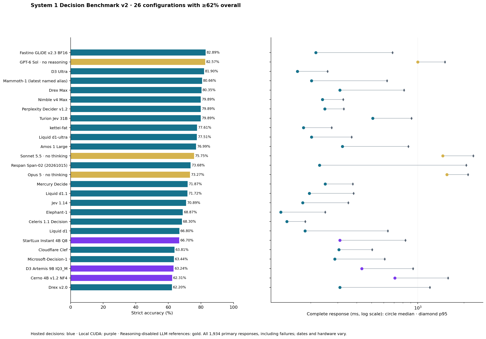
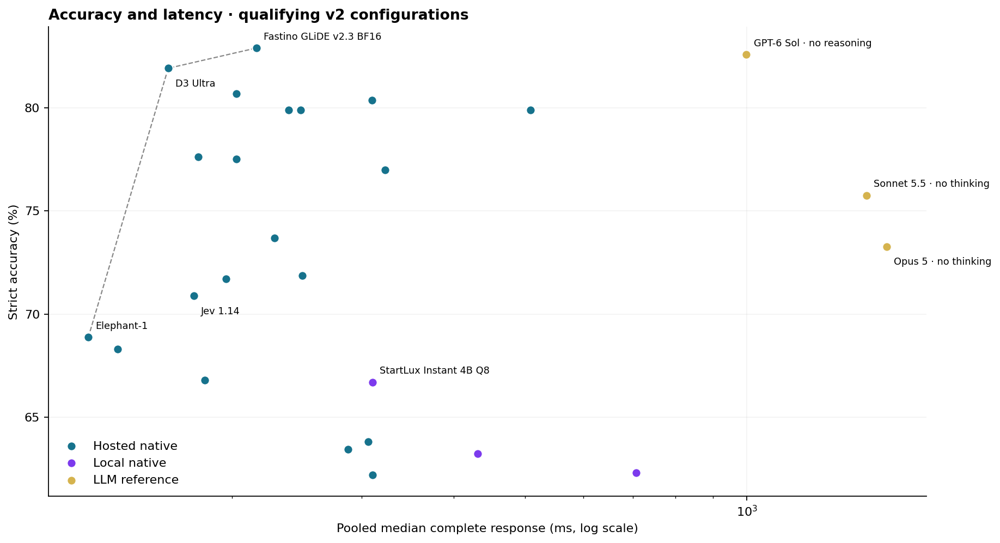
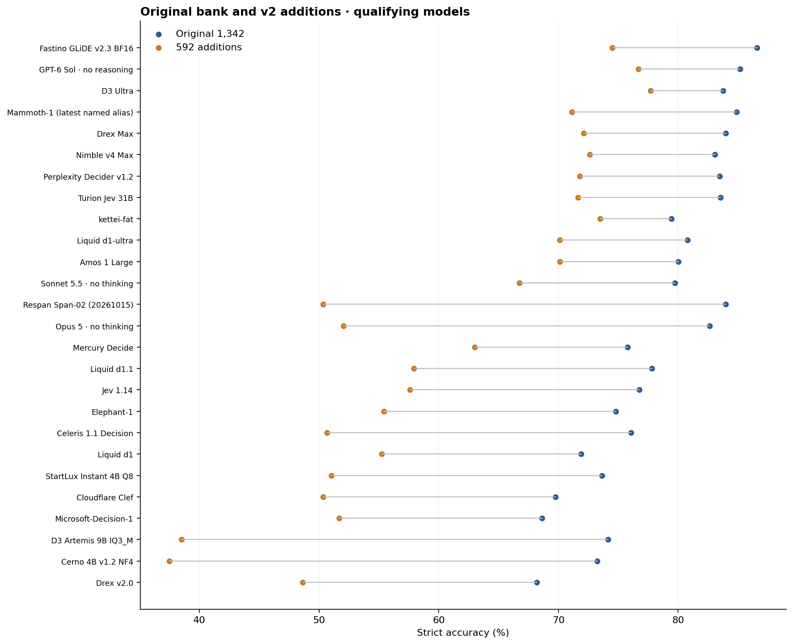
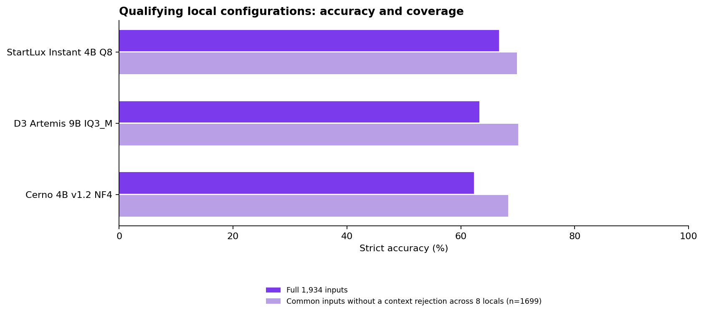
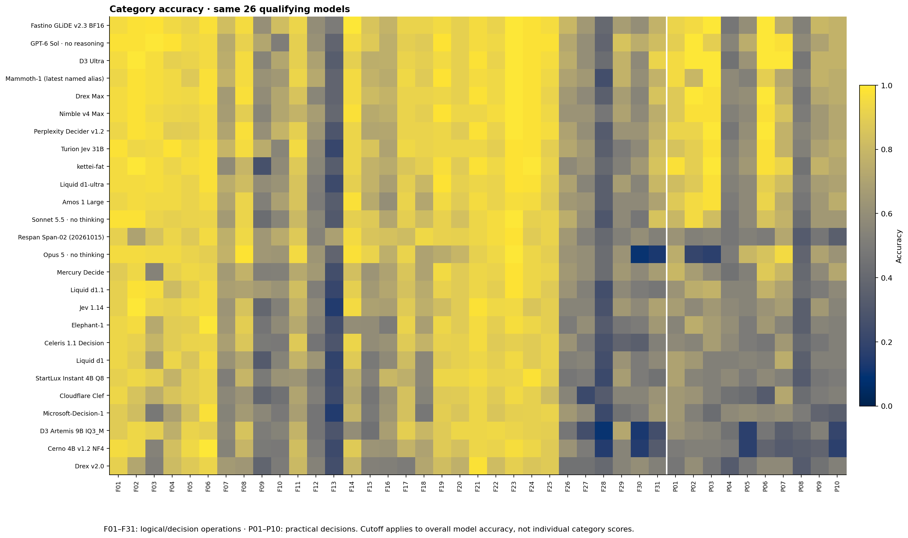
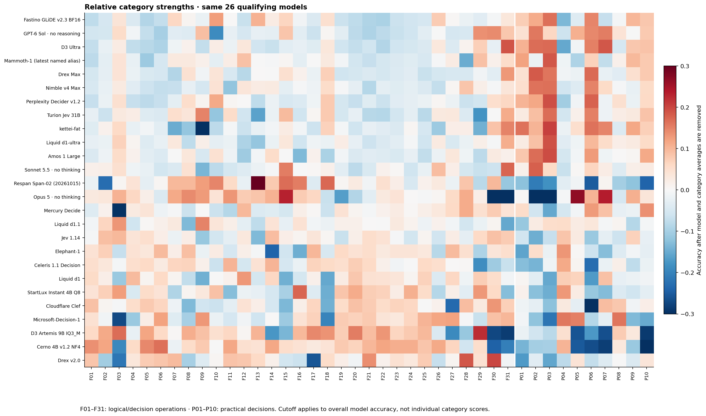

System 1 Decision Benchmark v2
1,934 questions ·41 categories ·26 qualifying configurations · Updated November 1,2026.
20 hosted decision models, 3 local configurations and 3 reasoning-disabled LLM references. Main graphs and category views require at least62% overall. All 38 measured v2 configurations remain available separately.
Accuracy and response time
Hosted decisionsLocal CUDALLM references, reasoning disabled

| Configuration | Setting | Correct | Overall | Equal-category | Additions | Usable | Mean ms | Median ms | p95 ms |
|---|---|---|---|---|---|---|---|---|---|
| Fastino GLiDE v2.3 BF16 | Hosted native | 1603/1934 | 82.89% | 82.52% | 74.49% | 1934/1934 | 341 | 216 | 685 |
| GPT-6 Sol · no reasoning | LLM reference | 1597/1934 | 82.57% | 82.83% | 76.69% | 1934/1934 | 1057 | 999 | 1502 |
| D3 Ultra | Hosted native | 1584/1934 | 81.90% | 82.00% | 77.70% | 1934/1934 | 186 | 164 | 257 |
| Mammoth-1 (latest named alias) | Hosted native | 1560/1934 | 80.66% | 80.40% | 71.11% | 1933/1934 | 277 | 203 | 630 |
| Drex Max | Hosted native | 1554/1934 | 80.35% | 80.28% | 72.13% | 1926/1934 | 357 | 310 | 813 |
| Nimble v4 Max | Hosted native | 1545/1934 | 79.89% | 79.85% | 72.64% | 1933/1934 | 259 | 239 | 326 |
| Perplexity Decider v1.2 | Hosted native | 1545/1934 | 79.89% | 79.59% | 71.79% | 1933/1934 | 282 | 248 | 329 |
| Turion Jev 31B | Hosted native | 1545/1934 | 79.89% | 79.64% | 71.62% | 1934/1934 | 572 | 509 | 909 |
| kettei-fat | Hosted native | 1501/1934 | 77.61% | 78.50% | 73.48% | 1934/1934 | 199 | 180 | 274 |
| Liquid d1-ultra | Hosted native | 1499/1934 | 77.51% | 77.45% | 70.10% | 1933/1934 | 229 | 203 | 370 |
| Amos 1 Large | Hosted native | 1489/1934 | 76.99% | 76.90% | 70.10% | 1934/1934 | 411 | 323 | 869 |
| Sonnet 5.5 · no thinking | LLM reference | 1465/1934 | 75.75% | 75.81% | 66.72% | 1934/1934 | 1552 | 1454 | 2304 |
| Respan Span-02 (20261015) | Hosted native | 1425/1934 | 73.68% | 72.21% | 50.34% | 1934/1934 | 521 | 228 | 2069 |
| Opus 5 · no thinking | LLM reference | 1417/1934 | 73.27% | 72.03% | 52.03% | 1749/1934 | 1582 | 1547 | 2124 |
| Mercury Decide | Hosted native | 1390/1934 | 71.87% | 71.86% | 63.01% | 1933/1934 | 270 | 249 | 376 |
| Liquid d1.1 | Hosted native | 1387/1934 | 71.72% | 71.19% | 57.94% | 1934/1934 | 235 | 196 | 381 |
| Jev 1.14 | Hosted native | 1371/1934 | 70.89% | 70.75% | 57.60% | 1934/1934 | 215 | 178 | 352 |
| Elephant-1 | Hosted native | 1332/1934 | 68.87% | 68.32% | 55.41% | 1934/1934 | 151 | 128 | 249 |
| Celeris 1.1 Decision | Hosted native | 1321/1934 | 68.30% | 67.66% | 50.68% | 1934/1934 | 156 | 140 | 184 |
| Liquid d1 | Hosted native | 1292/1934 | 66.80% | 66.77% | 55.24% | 1934/1934 | 262 | 184 | 638 |
| StartLux Instant 4B Q8 | Local native | 1290/1934 | 66.70% | 66.13% | 51.01% | 1934/1934 | 372 | 310 | 831 |
| Cloudflare Clef | Hosted native | 1234/1934 | 63.81% | 63.73% | 50.34% | 1934/1934 | 322 | 306 | 503 |
| Microsoft-Decision-1 | Hosted native | 1227/1934 | 63.44% | 63.33% | 51.69% | 1934/1934 | 345 | 287 | 608 |
| D3 Artemis 9B IQ3_M | Local native | 1223/1934 | 63.24% | 61.91% | 38.51% | 1765/1934 | 476 | 431 | 931 |
| Cerno 4B v1.2 NF4 | Local native | 1205/1934 | 62.31% | 61.33% | 37.50% | 1783/1934 | 803 | 708 | 1575 |
| Drex v2.0 | Hosted native | 1203/1934 | 62.20% | 61.96% | 48.65% | 1842/1934 | 498 | 310 | 1199 |
Medians and p95s pool individual primary response times. Failed responses remain in both accuracy and all-primary timing. Setup/loading/pacing are excluded; network is included. Usable-only medians are in the CSV. Complete v2 costs are not consolidated; older tariffs are not scaled to this bank.

What the larger bank shows
Fastino GLiDE v2.3 has the highest observed full-bank score: 1603/1,934 (82.89%), compared with GPT-6 Sol's 1597 (82.57%). The six-answer gap is small: 147 questions favor Fastino and 141 favor Sol; the paired exact test gives p=0.768. A 95% paired item-resampling interval for the accuracy gap spans -1.40 to +2.02 percentage points. The category-mixture interval is wider, from -2.67 to +3.68 points. These intervals describe hypothetical bank mixtures, not inference repeatability or independent template sampling. This is not evidence of a general intelligence advantage.
Equal-weight category accuracy reverses the narrow lead: Sol 82.83%, Fastino 82.52%. On the 192 logical additions both score 129; on the 400 practical additions Sol scores 325 and Fastino 312. Fastino's clearer measured advantage is latency: 216 ms median versus 999 ms, about 4.6 times faster under these collection conditions.
D3 Ultra leads the 592 additions with 460/592 (77.70%), including 138/192 logical additions. It reaches 81.90% overall with a 164 ms median. Neither the overall ranking nor practical-only scores fully describe this profile.
StartLux Instant leads the eight measured local configurations on the full bank: 1290/1,934 (66.70%), 310 ms median, and usable responses on all 1,934 inputs. It ties for the planning lead at 40/43. Among Artemis's 1,765 usable inputs, Instant scores 1,226 and Artemis 1,223. On the 1,699 inputs without a context rejection from any of the eight locals, Artemis scores 1,190 and Instant 1,187. These selected subsets show a near-tie; Instant's full-bank lead also reflects broader input coverage. Untested local models cannot be ranked from this run.
Distinct observed specialties
| Model | Strong category | Limitation or weaker category |
|---|---|---|
| Fastino | Truth-teller consistency 61/74, versus Sol 38/74 | Robust decisions without a prior 16/40; tool/clarification selection 19/40 |
| Sol, no reasoning | Practical additions 325/400; contextual policy 39/40 | Sequential procedures 18/48; truth-teller consistency 38/74 |
| D3 Ultra | Information-flow security 37/40; contextual policy 40/40 | Sequential procedures 16/48 |
| Respan Span-02 | Sequential procedures 33/48, ahead of the next observed 24/48 | Fact extraction/normalization 13/40; severity rubric 14/40 |
| Turion Jev 31B | Exact truth counting 53/71 | Sequential procedures 10/48 |
| Kettei-fat | Request routing 39/40; source authority 43/43 | Exact truth counting 19/71 |
| Opus 5, no thinking | Authorization/scope 32/40; one-to-one assignments 66/67 | 185 declared refusals affect full-bank coverage |
Category specialties are exploratory across many comparisons, generally based on 40–76 questions. Narrow leads do not establish general expertise. All leader/tie tables use the same 26 qualifying configurations.
The additions retain headroom: the best observed score is 19/40 for robust decisions without a prior and 23/40 for fact extraction/normalization. Low accuracy alone is not a validation of question quality; these are the frozen, previously reviewed tasks used for this evaluation.

The two question sets have different mixes; their difference does not isolate a causal source of difficulty. Capacity and service failures remain unsuccessful.

Named categories and observed leaders
All 41 categories use the same 26 qualifying configurations. The cutoff applies to overall model accuracy; low category scores remain visible. F26–F31 grew from 8 to 40 questions each. P01–P10 are ten new practical categories with 40 questions each.

| ID | Category | Best correct | Observed leaders/ties | Cohort mean |
|---|---|---|---|---|
| F01 | Lookup and filtering | 42/43 | GPT-6 Sol · no reasoning; Turion Jev 31B; Sonnet 5.5 · no thinking | 93.29% |
| F02 | Forward conditionals | 46/46 | D3 Ultra; kettei-fat; Jev 1.14 | 93.14% |
| F03 | Necessary conditions | 52/52 | GPT-6 Sol · no reasoning | 84.62% |
| F04 | Boolean scope | 53/54 | GPT-6 Sol · no reasoning; Turion Jev 31B | 89.10% |
| F05 | Quantifiers and sets | 47/49 | kettei-fat | 91.05% |
| F06 | Comparisons | 40/40 | Elephant-1; Cerno 4B v1.2 NF4 | 95.10% |
| F07 | Scheduling | 63/76 | Fastino GLiDE v2.3 BF16 | 67.16% |
| F08 | One-to-one assignments | 66/67 | Opus 5 · no thinking | 85.07% |
| F09 | Exact truth counting | 53/71 | Turion Jev 31B | 52.93% |
| F10 | Truth-teller consistency | 61/74 | Fastino GLiDE v2.3 BF16 | 60.24% |
| F11 | Sufficiency and inconsistency | 39/41 | Turion Jev 31B; Opus 5 · no thinking | 82.83% |
| F12 | Object swaps | 38/52 | Mammoth-1 (latest named alias) | 56.66% |
| F13 | Sequential procedures | 33/48 | Respan Span-02 (20261015) | 30.05% |
| F14 | Temporal intervals | 42/42 | Fastino GLiDE v2.3 BF16 | 88.00% |
| F15 | Spatial tracking | 45/49 | Opus 5 · no thinking | 69.54% |
| F16 | Reference binding | 42/50 | Respan Span-02 (20261015) | 69.31% |
| F17 | Beliefs and perspectives | 47/50 | Mammoth-1 (latest named alias); Turion Jev 31B | 86.62% |
| F18 | Causal intervention | 47/50 | Respan Span-02 (20261015) | 77.46% |
| F19 | Exceptions and priorities | 57/58 | GPT-6 Sol · no reasoning; Mammoth-1 (latest named alias); Nimble v4 Max; Liquid d1-ultra | 91.58% |
| F20 | Planning | 40/43 | Nimble v4 Max; Turion Jev 31B; StartLux Instant 4B Q8; D3 Artemis 9B IQ3_M | 88.64% |
| F21 | Directed reachability | 42/43 | D3 Ultra; Drex Max; Perplexity Decider v1.2; kettei-fat; Jev 1.14; Drex v2.0 | 94.63% |
| F22 | Preference ordering | 49/51 | Nimble v4 Max; Sonnet 5.5 · no thinking; Respan Span-02 (20261015) | 91.93% |
| F23 | Rule counterexamples | 52/52 | Fastino GLiDE v2.3 BF16; GPT-6 Sol · no reasoning; D3 Ultra; Mammoth-1 (latest named alias); Drex Max; Nimble v4 Max; Perplexity Decider v1.2; Sonnet 5.5 · no thinking; Opus 5 · no thinking | 96.75% |
| F24 | Authority and stale records | 43/43 | kettei-fat | 93.74% |
| F25 | Fault diagnosis | 49/50 | GPT-6 Sol · no reasoning | 91.31% |
| F26 | Probabilistic risk | 32/40 | Fastino GLiDE v2.3 BF16 | 62.79% |
| F27 | Value of information | 26/40 | Fastino GLiDE v2.3 BF16; Mammoth-1 (latest named alias); Turion Jev 31B | 55.00% |
| F28 | Robust decisions without a prior | 19/40 | Nimble v4 Max | 32.31% |
| F29 | Strategic decisions | 34/40 | GPT-6 Sol · no reasoning | 61.25% |
| F30 | Concurrent-history consistency | 30/40 | GPT-6 Sol · no reasoning | 50.87% |
| F31 | Information-flow security | 37/40 | D3 Ultra | 64.52% |
| P01 | Understanding requests and routing | 39/40 | kettei-fat | 75.48% |
| P02 | Recognizing multiple requested actions | 40/40 | GPT-6 Sol · no reasoning; D3 Ultra; Drex Max | 74.23% |
| P03 | Tracking current conversational intention | 40/40 | Fastino GLiDE v2.3 BF16; D3 Ultra; Mammoth-1 (latest named alias); Perplexity Decider v1.2; kettei-fat | 73.94% |
| P04 | Selecting a tool or requesting clarification | 24/40 | Elephant-1 | 51.25% |
| P05 | Checking authorization and scope | 32/40 | Opus 5 · no thinking | 54.33% |
| P06 | Making decisions with untrusted content | 40/40 | Fastino GLiDE v2.3 BF16; GPT-6 Sol · no reasoning; D3 Ultra; Drex Max; Perplexity Decider v1.2 | 75.67% |
| P07 | Applying a contextual content policy | 40/40 | D3 Ultra | 72.31% |
| P08 | Extracting and normalizing facts | 23/40 | GPT-6 Sol · no reasoning | 43.46% |
| P09 | Checking claims against supplied evidence | 32/40 | Fastino GLiDE v2.3 BF16 | 60.29% |
| P10 | Assigning severity or priority from a rubric | 31/40 | Fastino GLiDE v2.3 BF16; GPT-6 Sol · no reasoning; D3 Ultra | 59.71% |
F01 · Lookup and filtering · 43 questions
Select records that meet stated conditions
Which listed request is both signed and marked urgent?
Observed leader/ties: GPT-6 Sol · no reasoning; Turion Jev 31B; Sonnet 5.5 · no thinking · 42/43
| Configuration | Correct / tested | Median |
|---|---|---|
| GPT-6 Sol · no reasoning | 42/43 · 97.67% | 1011 ms |
| Sonnet 5.5 · no thinking | 42/43 · 97.67% | 1462 ms |
| Turion Jev 31B | 42/43 · 97.67% | 522 ms |
| D3 Ultra | 41/43 · 95.35% | 140 ms |
| Drex Max | 41/43 · 95.35% | 310 ms |
| Fastino GLiDE v2.3 BF16 | 41/43 · 95.35% | 204 ms |
| kettei-fat | 41/43 · 95.35% | 170 ms |
| Liquid d1-ultra | 41/43 · 95.35% | 206 ms |
| Cerno 4B v1.2 NF4 | 41/43 · 95.35% | 598 ms |
| Nimble v4 Max | 41/43 · 95.35% | 232 ms |
| Opus 5 · no thinking | 41/43 · 95.35% | 1475 ms |
| Amos 1 Large | 40/43 · 93.02% | 264 ms |
| Celeris 1.1 Decision | 40/43 · 93.02% | 137 ms |
| Cloudflare Clef | 40/43 · 93.02% | 264 ms |
| Elephant-1 | 40/43 · 93.02% | 135 ms |
| Liquid d1 | 40/43 · 93.02% | 192 ms |
| Mammoth-1 (latest named alias) | 40/43 · 93.02% | 251 ms |
| Perplexity Decider v1.2 | 40/43 · 93.02% | 249 ms |
| Drex v2.0 | 39/43 · 90.70% | 280 ms |
| Jev 1.14 | 39/43 · 90.70% | 181 ms |
| Liquid d1.1 | 39/43 · 90.70% | 219 ms |
| StartLux Instant 4B Q8 | 39/43 · 90.70% | 259 ms |
| Respan Span-02 (20261015) | 39/43 · 90.70% | 198 ms |
| D3 Artemis 9B IQ3_M | 38/43 · 88.37% | 352 ms |
| Mercury Decide | 38/43 · 88.37% | 241 ms |
| Microsoft-Decision-1 | 38/43 · 88.37% | 279 ms |
F02 · Forward conditionals · 46 questions
Apply an implication from its trigger
If an active badge grants entry and this badge is active, what follows?
Observed leader/ties: D3 Ultra; kettei-fat; Jev 1.14 · 46/46
| Configuration | Correct / tested | Median |
|---|---|---|
| D3 Ultra | 46/46 · 100.00% | 148 ms |
| Jev 1.14 | 46/46 · 100.00% | 178 ms |
| kettei-fat | 46/46 · 100.00% | 178 ms |
| Drex Max | 45/46 · 97.83% | 288 ms |
| Fastino GLiDE v2.3 BF16 | 45/46 · 97.83% | 204 ms |
| Liquid d1.1 | 45/46 · 97.83% | 199 ms |
| Mammoth-1 (latest named alias) | 45/46 · 97.83% | 234 ms |
| Nimble v4 Max | 45/46 · 97.83% | 238 ms |
| Perplexity Decider v1.2 | 45/46 · 97.83% | 251 ms |
| GPT-6 Sol · no reasoning | 45/46 · 97.83% | 1044 ms |
| Sonnet 5.5 · no thinking | 45/46 · 97.83% | 1749 ms |
| Amos 1 Large | 44/46 · 95.65% | 263 ms |
| Elephant-1 | 44/46 · 95.65% | 144 ms |
| Liquid d1-ultra | 44/46 · 95.65% | 202 ms |
| Opus 5 · no thinking | 44/46 · 95.65% | 1569 ms |
| Cerno 4B v1.2 NF4 | 43/46 · 93.48% | 788 ms |
| D3 Artemis 9B IQ3_M | 43/46 · 93.48% | 503 ms |
| StartLux Instant 4B Q8 | 43/46 · 93.48% | 321 ms |
| Mercury Decide | 43/46 · 93.48% | 244 ms |
| Turion Jev 31B | 43/46 · 93.48% | 498 ms |
| Celeris 1.1 Decision | 42/46 · 91.30% | 138 ms |
| Liquid d1 | 41/46 · 89.13% | 215 ms |
| Cloudflare Clef | 39/46 · 84.78% | 278 ms |
| Microsoft-Decision-1 | 38/46 · 82.61% | 283 ms |
| Drex v2.0 | 33/46 · 71.74% | 220 ms |
| Respan Span-02 (20261015) | 32/46 · 69.57% | 204 ms |
F03 · Necessary conditions · 52 questions
Reason backward from a missing required condition
Every approved request needs a valid ticket; can one without a ticket be approved?
Observed leader/ties: GPT-6 Sol · no reasoning · 52/52
| Configuration | Correct / tested | Median |
|---|---|---|
| GPT-6 Sol · no reasoning | 52/52 · 100.00% | 1031 ms |
| Fastino GLiDE v2.3 BF16 | 51/52 · 98.08% | 196 ms |
| D3 Ultra | 50/52 · 96.15% | 156 ms |
| Drex Max | 50/52 · 96.15% | 286 ms |
| kettei-fat | 50/52 · 96.15% | 178 ms |
| Liquid d1.1 | 50/52 · 96.15% | 214 ms |
| Liquid d1-ultra | 50/52 · 96.15% | 200 ms |
| Mammoth-1 (latest named alias) | 50/52 · 96.15% | 223 ms |
| Perplexity Decider v1.2 | 50/52 · 96.15% | 252 ms |
| Amos 1 Large | 49/52 · 94.23% | 264 ms |
| Nimble v4 Max | 49/52 · 94.23% | 239 ms |
| Opus 5 · no thinking | 49/52 · 94.23% | 1570 ms |
| Turion Jev 31B | 49/52 · 94.23% | 508 ms |
| Jev 1.14 | 48/52 · 92.31% | 180 ms |
| Sonnet 5.5 · no thinking | 48/52 · 92.31% | 1726 ms |
| D3 Artemis 9B IQ3_M | 47/52 · 90.38% | 493 ms |
| StartLux Instant 4B Q8 | 47/52 · 90.38% | 305 ms |
| Respan Span-02 (20261015) | 44/52 · 84.62% | 208 ms |
| Celeris 1.1 Decision | 41/52 · 78.85% | 138 ms |
| Cloudflare Clef | 39/52 · 75.00% | 265 ms |
| Elephant-1 | 38/52 · 73.08% | 141 ms |
| Liquid d1 | 35/52 · 67.31% | 196 ms |
| Cerno 4B v1.2 NF4 | 28/52 · 53.85% | 784 ms |
| Mercury Decide | 28/52 · 53.85% | 252 ms |
| Drex v2.0 | 27/52 · 51.92% | 215 ms |
| Microsoft-Decision-1 | 25/52 · 48.08% | 289 ms |
F04 · Boolean scope · 54 questions
Track combinations such as both, either and exactly one
Which choice satisfies exactly one of two stated conditions?
Observed leader/ties: GPT-6 Sol · no reasoning; Turion Jev 31B · 53/54
| Configuration | Correct / tested | Median |
|---|---|---|
| GPT-6 Sol · no reasoning | 53/54 · 98.15% | 1050 ms |
| Turion Jev 31B | 53/54 · 98.15% | 504 ms |
| Amos 1 Large | 51/54 · 94.44% | 264 ms |
| Drex Max | 51/54 · 94.44% | 293 ms |
| Fastino GLiDE v2.3 BF16 | 51/54 · 94.44% | 203 ms |
| Liquid d1-ultra | 51/54 · 94.44% | 199 ms |
| Mammoth-1 (latest named alias) | 51/54 · 94.44% | 285 ms |
| Opus 5 · no thinking | 51/54 · 94.44% | 1549 ms |
| kettei-fat | 50/54 · 92.59% | 172 ms |
| Liquid d1 | 50/54 · 92.59% | 196 ms |
| Nimble v4 Max | 50/54 · 92.59% | 238 ms |
| Respan Span-02 (20261015) | 50/54 · 92.59% | 208 ms |
| D3 Ultra | 49/54 · 90.74% | 151 ms |
| Jev 1.14 | 49/54 · 90.74% | 192 ms |
| Mercury Decide | 49/54 · 90.74% | 252 ms |
| Sonnet 5.5 · no thinking | 49/54 · 90.74% | 1400 ms |
| Celeris 1.1 Decision | 48/54 · 88.89% | 138 ms |
| Elephant-1 | 48/54 · 88.89% | 135 ms |
| Perplexity Decider v1.2 | 48/54 · 88.89% | 245 ms |
| Cloudflare Clef | 46/54 · 85.19% | 280 ms |
| Cerno 4B v1.2 NF4 | 45/54 · 83.33% | 788 ms |
| Drex v2.0 | 44/54 · 81.48% | 250 ms |
| Liquid d1.1 | 44/54 · 81.48% | 217 ms |
| StartLux Instant 4B Q8 | 42/54 · 77.78% | 309 ms |
| D3 Artemis 9B IQ3_M | 41/54 · 75.93% | 505 ms |
| Microsoft-Decision-1 | 37/54 · 68.52% | 293 ms |
F05 · Quantifiers and sets · 49 questions
Track all, some, none and overlapping groups
All teal tokens are marked; no marked token is blank; which relation follows?
Observed leader/ties: kettei-fat · 47/49
| Configuration | Correct / tested | Median |
|---|---|---|
| kettei-fat | 47/49 · 95.92% | 173 ms |
| Drex Max | 46/49 · 93.88% | 278 ms |
| Jev 1.14 | 46/49 · 93.88% | 178 ms |
| Cerno 4B v1.2 NF4 | 46/49 · 93.88% | 615 ms |
| Mercury Decide | 46/49 · 93.88% | 228 ms |
| GPT-6 Sol · no reasoning | 46/49 · 93.88% | 1005 ms |
| Turion Jev 31B | 46/49 · 93.88% | 500 ms |
| Amos 1 Large | 45/49 · 91.84% | 262 ms |
| Celeris 1.1 Decision | 45/49 · 91.84% | 139 ms |
| D3 Ultra | 45/49 · 91.84% | 141 ms |
| Fastino GLiDE v2.3 BF16 | 45/49 · 91.84% | 200 ms |
| Liquid d1-ultra | 45/49 · 91.84% | 199 ms |
| D3 Artemis 9B IQ3_M | 45/49 · 91.84% | 361 ms |
| Nimble v4 Max | 45/49 · 91.84% | 235 ms |
| Opus 5 · no thinking | 45/49 · 91.84% | 1470 ms |
| Sonnet 5.5 · no thinking | 45/49 · 91.84% | 1478 ms |
| Cloudflare Clef | 44/49 · 89.80% | 261 ms |
| Elephant-1 | 44/49 · 89.80% | 138 ms |
| Liquid d1.1 | 44/49 · 89.80% | 196 ms |
| StartLux Instant 4B Q8 | 44/49 · 89.80% | 252 ms |
| Perplexity Decider v1.2 | 44/49 · 89.80% | 248 ms |
| Drex v2.0 | 43/49 · 87.76% | 249 ms |
| Mammoth-1 (latest named alias) | 43/49 · 87.76% | 217 ms |
| Respan Span-02 (20261015) | 43/49 · 87.76% | 198 ms |
| Liquid d1 | 42/49 · 85.71% | 188 ms |
| Microsoft-Decision-1 | 41/49 · 83.67% | 272 ms |
F06 · Comparisons · 40 questions
Combine ordered comparisons
A is taller than B and B than C; how do A and C compare?
Observed leader/ties: Elephant-1; Cerno 4B v1.2 NF4 · 40/40
| Configuration | Correct / tested | Median |
|---|---|---|
| Elephant-1 | 40/40 · 100.00% | 134 ms |
| Cerno 4B v1.2 NF4 | 40/40 · 100.00% | 507 ms |
| Drex Max | 39/40 · 97.50% | 228 ms |
| Fastino GLiDE v2.3 BF16 | 39/40 · 97.50% | 202 ms |
| kettei-fat | 39/40 · 97.50% | 167 ms |
| Liquid d1-ultra | 39/40 · 97.50% | 203 ms |
| Mammoth-1 (latest named alias) | 39/40 · 97.50% | 197 ms |
| Microsoft-Decision-1 | 39/40 · 97.50% | 290 ms |
| Turion Jev 31B | 39/40 · 97.50% | 455 ms |
| Amos 1 Large | 38/40 · 95.00% | 263 ms |
| D3 Ultra | 38/40 · 95.00% | 130 ms |
| Jev 1.14 | 38/40 · 95.00% | 183 ms |
| Liquid d1.1 | 38/40 · 95.00% | 204 ms |
| Liquid d1 | 38/40 · 95.00% | 194 ms |
| Nimble v4 Max | 38/40 · 95.00% | 234 ms |
| Perplexity Decider v1.2 | 38/40 · 95.00% | 250 ms |
| GPT-6 Sol · no reasoning | 38/40 · 95.00% | 996 ms |
| Respan Span-02 (20261015) | 38/40 · 95.00% | 196 ms |
| Celeris 1.1 Decision | 37/40 · 92.50% | 136 ms |
| Cloudflare Clef | 37/40 · 92.50% | 288 ms |
| Drex v2.0 | 37/40 · 92.50% | 205 ms |
| StartLux Instant 4B Q8 | 37/40 · 92.50% | 227 ms |
| Mercury Decide | 37/40 · 92.50% | 240 ms |
| Sonnet 5.5 · no thinking | 37/40 · 92.50% | 1478 ms |
| D3 Artemis 9B IQ3_M | 36/40 · 90.00% | 279 ms |
| Opus 5 · no thinking | 36/40 · 90.00% | 1536 ms |
F07 · Scheduling · 76 questions
Fit events around order and exclusion rules
Which timetable puts one meeting before another without overlapping a break?
Observed leader/ties: Fastino GLiDE v2.3 BF16 · 63/76
| Configuration | Correct / tested | Median |
|---|---|---|
| Fastino GLiDE v2.3 BF16 | 63/76 · 82.89% | 222 ms |
| Turion Jev 31B | 60/76 · 78.95% | 496 ms |
| Mammoth-1 (latest named alias) | 59/76 · 77.63% | 242 ms |
| Opus 5 · no thinking | 59/76 · 77.63% | 1502 ms |
| Respan Span-02 (20261015) | 58/76 · 76.32% | 209 ms |
| D3 Ultra | 57/76 · 75.00% | 141 ms |
| Liquid d1-ultra | 57/76 · 75.00% | 201 ms |
| GPT-6 Sol · no reasoning | 56/76 · 73.68% | 1041 ms |
| Amos 1 Large | 54/76 · 71.05% | 314 ms |
| Perplexity Decider v1.2 | 54/76 · 71.05% | 250 ms |
| Celeris 1.1 Decision | 52/76 · 68.42% | 137 ms |
| Liquid d1.1 | 52/76 · 68.42% | 230 ms |
| Nimble v4 Max | 51/76 · 67.11% | 237 ms |
| Drex v2.0 | 50/76 · 65.79% | 209 ms |
| Drex Max | 50/76 · 65.79% | 296 ms |
| Mercury Decide | 50/76 · 65.79% | 230 ms |
| Sonnet 5.5 · no thinking | 50/76 · 65.79% | 1479 ms |
| Elephant-1 | 49/76 · 64.47% | 139 ms |
| Jev 1.14 | 48/76 · 63.16% | 181 ms |
| Liquid d1 | 47/76 · 61.84% | 214 ms |
| kettei-fat | 44/76 · 57.89% | 168 ms |
| Cloudflare Clef | 43/76 · 56.58% | 286 ms |
| D3 Artemis 9B IQ3_M | 43/76 · 56.58% | 351 ms |
| Cerno 4B v1.2 NF4 | 41/76 · 53.95% | 596 ms |
| Microsoft-Decision-1 | 41/76 · 53.95% | 280 ms |
| StartLux Instant 4B Q8 | 39/76 · 51.32% | 244 ms |
F08 · One-to-one assignments · 67 questions
Give each item a unique partner while satisfying clues
Assign three people different desks using location restrictions.
Observed leader/ties: Opus 5 · no thinking · 66/67
| Configuration | Correct / tested | Median |
|---|---|---|
| Opus 5 · no thinking | 66/67 · 98.51% | 1458 ms |
| Drex Max | 65/67 · 97.01% | 276 ms |
| Perplexity Decider v1.2 | 65/67 · 97.01% | 249 ms |
| D3 Ultra | 64/67 · 95.52% | 143 ms |
| Fastino GLiDE v2.3 BF16 | 64/67 · 95.52% | 195 ms |
| Mammoth-1 (latest named alias) | 64/67 · 95.52% | 239 ms |
| Turion Jev 31B | 64/67 · 95.52% | 513 ms |
| Respan Span-02 (20261015) | 63/67 · 94.03% | 200 ms |
| Amos 1 Large | 62/67 · 92.54% | 309 ms |
| Sonnet 5.5 · no thinking | 62/67 · 92.54% | 1388 ms |
| GPT-6 Sol · no reasoning | 61/67 · 91.04% | 1008 ms |
| Elephant-1 | 60/67 · 89.55% | 140 ms |
| Nimble v4 Max | 60/67 · 89.55% | 236 ms |
| Celeris 1.1 Decision | 58/67 · 86.57% | 137 ms |
| Jev 1.14 | 57/67 · 85.07% | 179 ms |
| D3 Artemis 9B IQ3_M | 57/67 · 85.07% | 379 ms |
| Liquid d1-ultra | 55/67 · 82.09% | 194 ms |
| kettei-fat | 53/67 · 79.10% | 170 ms |
| Cerno 4B v1.2 NF4 | 53/67 · 79.10% | 618 ms |
| StartLux Instant 4B Q8 | 53/67 · 79.10% | 255 ms |
| Mercury Decide | 52/67 · 77.61% | 239 ms |
| Liquid d1 | 48/67 · 71.64% | 239 ms |
| Liquid d1.1 | 47/67 · 70.15% | 216 ms |
| Microsoft-Decision-1 | 44/67 · 65.67% | 279 ms |
| Drex v2.0 | 43/67 · 64.18% | 248 ms |
| Cloudflare Clef | 42/67 · 62.69% | 287 ms |
F09 · Exact truth counting · 71 questions
Count precisely how many statements hold
Under the supplied facts, how many of six claims are true?
Observed leader/ties: Turion Jev 31B · 53/71
| Configuration | Correct / tested | Median |
|---|---|---|
| Turion Jev 31B | 53/71 · 74.65% | 504 ms |
| GPT-6 Sol · no reasoning | 51/71 · 71.83% | 1035 ms |
| Liquid d1.1 | 47/71 · 66.20% | 212 ms |
| Opus 5 · no thinking | 46/71 · 64.79% | 1610 ms |
| Respan Span-02 (20261015) | 46/71 · 64.79% | 213 ms |
| Mammoth-1 (latest named alias) | 44/71 · 61.97% | 217 ms |
| Fastino GLiDE v2.3 BF16 | 43/71 · 60.56% | 208 ms |
| Perplexity Decider v1.2 | 43/71 · 60.56% | 249 ms |
| Drex Max | 42/71 · 59.15% | 300 ms |
| Liquid d1-ultra | 42/71 · 59.15% | 192 ms |
| Microsoft-Decision-1 | 40/71 · 56.34% | 283 ms |
| D3 Ultra | 39/71 · 54.93% | 140 ms |
| Nimble v4 Max | 39/71 · 54.93% | 236 ms |
| Amos 1 Large | 37/71 · 52.11% | 324 ms |
| Mercury Decide | 37/71 · 52.11% | 243 ms |
| D3 Artemis 9B IQ3_M | 36/71 · 50.70% | 384 ms |
| Celeris 1.1 Decision | 35/71 · 49.30% | 137 ms |
| Cerno 4B v1.2 NF4 | 35/71 · 49.30% | 625 ms |
| StartLux Instant 4B Q8 | 35/71 · 49.30% | 261 ms |
| Elephant-1 | 33/71 · 46.48% | 131 ms |
| Sonnet 5.5 · no thinking | 30/71 · 42.25% | 1595 ms |
| Jev 1.14 | 28/71 · 39.44% | 180 ms |
| Cloudflare Clef | 27/71 · 38.03% | 288 ms |
| Drex v2.0 | 27/71 · 38.03% | 217 ms |
| Liquid d1 | 23/71 · 32.39% | 220 ms |
| kettei-fat | 19/71 · 26.76% | 171 ms |
F10 · Truth-teller consistency · 74 questions
Find a consistent pattern of truthful and false statements
Which assignment of honest and dishonest speakers fits their claims?
Observed leader/ties: Fastino GLiDE v2.3 BF16 · 61/74
| Configuration | Correct / tested | Median |
|---|---|---|
| Fastino GLiDE v2.3 BF16 | 61/74 · 82.43% | 213 ms |
| Perplexity Decider v1.2 | 58/74 · 78.38% | 247 ms |
| Respan Span-02 (20261015) | 55/74 · 74.32% | 254 ms |
| D3 Ultra | 53/74 · 71.62% | 173 ms |
| Drex Max | 53/74 · 71.62% | 226 ms |
| Nimble v4 Max | 53/74 · 71.62% | 241 ms |
| Amos 1 Large | 51/74 · 68.92% | 266 ms |
| Mammoth-1 (latest named alias) | 48/74 · 64.86% | 244 ms |
| Opus 5 · no thinking | 47/74 · 63.51% | 1572 ms |
| Liquid d1.1 | 46/74 · 62.16% | 227 ms |
| Liquid d1-ultra | 46/74 · 62.16% | 199 ms |
| StartLux Instant 4B Q8 | 46/74 · 62.16% | 363 ms |
| Elephant-1 | 43/74 · 58.11% | 140 ms |
| kettei-fat | 43/74 · 58.11% | 185 ms |
| Sonnet 5.5 · no thinking | 41/74 · 55.41% | 1556 ms |
| Turion Jev 31B | 41/74 · 55.41% | 508 ms |
| Liquid d1 | 40/74 · 54.05% | 193 ms |
| D3 Artemis 9B IQ3_M | 40/74 · 54.05% | 566 ms |
| Jev 1.14 | 39/74 · 52.70% | 175 ms |
| Mercury Decide | 39/74 · 52.70% | 252 ms |
| GPT-6 Sol · no reasoning | 38/74 · 51.35% | 1092 ms |
| Drex v2.0 | 37/74 · 50.00% | 253 ms |
| Celeris 1.1 Decision | 36/74 · 48.65% | 138 ms |
| Cerno 4B v1.2 NF4 | 36/74 · 48.65% | 910 ms |
| Microsoft-Decision-1 | 36/74 · 48.65% | 291 ms |
| Cloudflare Clef | 33/74 · 44.59% | 274 ms |
F11 · Sufficiency and inconsistency · 41 questions
Determine whether facts force an answer or contradict one another
Is a proposed arrangement determined, impossible or still underdetermined?
Observed leader/ties: Turion Jev 31B; Opus 5 · no thinking · 39/41
| Configuration | Correct / tested | Median |
|---|---|---|
| Opus 5 · no thinking | 39/41 · 95.12% | 1446 ms |
| Turion Jev 31B | 39/41 · 95.12% | 515 ms |
| Fastino GLiDE v2.3 BF16 | 38/41 · 92.68% | 193 ms |
| Mammoth-1 (latest named alias) | 38/41 · 92.68% | 250 ms |
| D3 Ultra | 37/41 · 90.24% | 145 ms |
| Perplexity Decider v1.2 | 37/41 · 90.24% | 254 ms |
| GPT-6 Sol · no reasoning | 37/41 · 90.24% | 990 ms |
| Celeris 1.1 Decision | 36/41 · 87.80% | 138 ms |
| kettei-fat | 36/41 · 87.80% | 172 ms |
| Respan Span-02 (20261015) | 36/41 · 87.80% | 201 ms |
| Amos 1 Large | 35/41 · 85.37% | 306 ms |
| Drex Max | 35/41 · 85.37% | 294 ms |
| Liquid d1-ultra | 35/41 · 85.37% | 190 ms |
| Liquid d1.1 | 34/41 · 82.93% | 195 ms |
| Cerno 4B v1.2 NF4 | 34/41 · 82.93% | 618 ms |
| Drex v2.0 | 33/41 · 80.49% | 244 ms |
| Sonnet 5.5 · no thinking | 33/41 · 80.49% | 1424 ms |
| Jev 1.14 | 32/41 · 78.05% | 174 ms |
| Liquid d1 | 32/41 · 78.05% | 233 ms |
| D3 Artemis 9B IQ3_M | 32/41 · 78.05% | 379 ms |
| Nimble v4 Max | 32/41 · 78.05% | 234 ms |
| Elephant-1 | 30/41 · 73.17% | 140 ms |
| Mercury Decide | 30/41 · 73.17% | 239 ms |
| Cloudflare Clef | 29/41 · 70.73% | 296 ms |
| Microsoft-Decision-1 | 28/41 · 68.29% | 288 ms |
| StartLux Instant 4B Q8 | 26/41 · 63.41% | 243 ms |
F12 · Object swaps · 52 questions
Update locations after repeated exchanges
A red token starts in box A; several box contents are swapped; where does it end?
Observed leader/ties: Mammoth-1 (latest named alias) · 38/52
| Configuration | Correct / tested | Median |
|---|---|---|
| Mammoth-1 (latest named alias) | 38/52 · 73.08% | 227 ms |
| D3 Ultra | 36/52 · 69.23% | 146 ms |
| Nimble v4 Max | 35/52 · 67.31% | 236 ms |
| Mercury Decide | 34/52 · 65.38% | 243 ms |
| Liquid d1 | 33/52 · 63.46% | 210 ms |
| Perplexity Decider v1.2 | 33/52 · 63.46% | 252 ms |
| Opus 5 · no thinking | 33/52 · 63.46% | 1527 ms |
| GPT-6 Sol · no reasoning | 32/52 · 61.54% | 1046 ms |
| Fastino GLiDE v2.3 BF16 | 31/52 · 59.62% | 224 ms |
| Jev 1.14 | 30/52 · 57.69% | 178 ms |
| Turion Jev 31B | 30/52 · 57.69% | 504 ms |
| Drex Max | 29/52 · 55.77% | 296 ms |
| kettei-fat | 29/52 · 55.77% | 173 ms |
| Sonnet 5.5 · no thinking | 29/52 · 55.77% | 1435 ms |
| Drex v2.0 | 28/52 · 53.85% | 218 ms |
| Elephant-1 | 28/52 · 53.85% | 144 ms |
| Respan Span-02 (20261015) | 28/52 · 53.85% | 202 ms |
| Cloudflare Clef | 27/52 · 51.92% | 250 ms |
| Liquid d1.1 | 27/52 · 51.92% | 214 ms |
| Liquid d1-ultra | 27/52 · 51.92% | 201 ms |
| Amos 1 Large | 26/52 · 50.00% | 326 ms |
| Cerno 4B v1.2 NF4 | 26/52 · 50.00% | 686 ms |
| StartLux Instant 4B Q8 | 25/52 · 48.08% | 279 ms |
| Celeris 1.1 Decision | 24/52 · 46.15% | 139 ms |
| D3 Artemis 9B IQ3_M | 24/52 · 46.15% | 399 ms |
| Microsoft-Decision-1 | 24/52 · 46.15% | 291 ms |
F13 · Sequential procedures · 48 questions
Apply each ordered edit to the current state
Toggle one flag, swap two values, then conditionally reset another flag.
Observed leader/ties: Respan Span-02 (20261015) · 33/48
| Configuration | Correct / tested | Median |
|---|---|---|
| Respan Span-02 (20261015) | 33/48 · 68.75% | 228 ms |
| Fastino GLiDE v2.3 BF16 | 24/48 · 50.00% | 200 ms |
| Nimble v4 Max | 19/48 · 39.58% | 234 ms |
| Drex Max | 18/48 · 37.50% | 250 ms |
| Mammoth-1 (latest named alias) | 18/48 · 37.50% | 230 ms |
| Opus 5 · no thinking | 18/48 · 37.50% | 1571 ms |
| GPT-6 Sol · no reasoning | 18/48 · 37.50% | 1011 ms |
| Amos 1 Large | 16/48 · 33.33% | 329 ms |
| D3 Ultra | 16/48 · 33.33% | 145 ms |
| kettei-fat | 16/48 · 33.33% | 171 ms |
| Sonnet 5.5 · no thinking | 15/48 · 31.25% | 1445 ms |
| Celeris 1.1 Decision | 14/48 · 29.17% | 139 ms |
| D3 Artemis 9B IQ3_M | 14/48 · 29.17% | 384 ms |
| Perplexity Decider v1.2 | 14/48 · 29.17% | 246 ms |
| Drex v2.0 | 12/48 · 25.00% | 217 ms |
| Elephant-1 | 12/48 · 25.00% | 149 ms |
| Mercury Decide | 12/48 · 25.00% | 230 ms |
| Cloudflare Clef | 11/48 · 22.92% | 257 ms |
| Liquid d1-ultra | 11/48 · 22.92% | 204 ms |
| Cerno 4B v1.2 NF4 | 11/48 · 22.92% | 626 ms |
| Liquid d1.1 | 10/48 · 20.83% | 217 ms |
| StartLux Instant 4B Q8 | 10/48 · 20.83% | 258 ms |
| Turion Jev 31B | 10/48 · 20.83% | 499 ms |
| Liquid d1 | 9/48 · 18.75% | 191 ms |
| Jev 1.14 | 7/48 · 14.58% | 188 ms |
| Microsoft-Decision-1 | 7/48 · 14.58% | 278 ms |
F14 · Temporal intervals · 42 questions
Compare starts, ends and overlapping periods
Which interval overlaps a specified event without containing it?
Observed leader/ties: Fastino GLiDE v2.3 BF16 · 42/42
| Configuration | Correct / tested | Median |
|---|---|---|
| Fastino GLiDE v2.3 BF16 | 42/42 · 100.00% | 239 ms |
| Amos 1 Large | 41/42 · 97.62% | 263 ms |
| Nimble v4 Max | 41/42 · 97.62% | 232 ms |
| Opus 5 · no thinking | 41/42 · 97.62% | 1499 ms |
| Drex Max | 40/42 · 95.24% | 265 ms |
| Jev 1.14 | 40/42 · 95.24% | 163 ms |
| Mammoth-1 (latest named alias) | 40/42 · 95.24% | 247 ms |
| GPT-6 Sol · no reasoning | 40/42 · 95.24% | 1064 ms |
| Respan Span-02 (20261015) | 40/42 · 95.24% | 201 ms |
| Celeris 1.1 Decision | 39/42 · 92.86% | 138 ms |
| kettei-fat | 39/42 · 92.86% | 171 ms |
| Perplexity Decider v1.2 | 39/42 · 92.86% | 247 ms |
| Turion Jev 31B | 39/42 · 92.86% | 505 ms |
| D3 Ultra | 38/42 · 90.48% | 149 ms |
| Liquid d1.1 | 38/42 · 90.48% | 201 ms |
| Liquid d1-ultra | 38/42 · 90.48% | 195 ms |
| Sonnet 5.5 · no thinking | 38/42 · 90.48% | 1561 ms |
| Liquid d1 | 37/42 · 88.10% | 210 ms |
| Cerno 4B v1.2 NF4 | 37/42 · 88.10% | 644 ms |
| Mercury Decide | 35/42 · 83.33% | 240 ms |
| Drex v2.0 | 33/42 · 78.57% | 260 ms |
| Microsoft-Decision-1 | 33/42 · 78.57% | 275 ms |
| StartLux Instant 4B Q8 | 32/42 · 76.19% | 286 ms |
| Cloudflare Clef | 31/42 · 73.81% | 272 ms |
| Elephant-1 | 25/42 · 59.52% | 139 ms |
| D3 Artemis 9B IQ3_M | 25/42 · 59.52% | 392 ms |
F15 · Spatial tracking · 49 questions
Update position or direction from described movement
Follow successive turns and moves, then identify the final direction.
Observed leader/ties: Opus 5 · no thinking · 45/49
| Configuration | Correct / tested | Median |
|---|---|---|
| Opus 5 · no thinking | 45/49 · 91.84% | 1612 ms |
| GPT-6 Sol · no reasoning | 43/49 · 87.76% | 1043 ms |
| Sonnet 5.5 · no thinking | 43/49 · 87.76% | 1451 ms |
| Fastino GLiDE v2.3 BF16 | 42/49 · 85.71% | 197 ms |
| Respan Span-02 (20261015) | 42/49 · 85.71% | 222 ms |
| Turion Jev 31B | 42/49 · 85.71% | 503 ms |
| Drex Max | 40/49 · 81.63% | 238 ms |
| kettei-fat | 38/49 · 77.55% | 171 ms |
| Liquid d1-ultra | 38/49 · 77.55% | 197 ms |
| Mammoth-1 (latest named alias) | 38/49 · 77.55% | 247 ms |
| D3 Ultra | 37/49 · 75.51% | 147 ms |
| Amos 1 Large | 36/49 · 73.47% | 328 ms |
| Nimble v4 Max | 36/49 · 73.47% | 235 ms |
| Perplexity Decider v1.2 | 35/49 · 71.43% | 255 ms |
| Jev 1.14 | 34/49 · 69.39% | 178 ms |
| Liquid d1.1 | 32/49 · 65.31% | 222 ms |
| Cerno 4B v1.2 NF4 | 31/49 · 63.27% | 628 ms |
| Mercury Decide | 31/49 · 63.27% | 229 ms |
| Celeris 1.1 Decision | 29/49 · 59.18% | 137 ms |
| Elephant-1 | 29/49 · 59.18% | 139 ms |
| Drex v2.0 | 26/49 · 53.06% | 218 ms |
| StartLux Instant 4B Q8 | 26/49 · 53.06% | 253 ms |
| Liquid d1 | 24/49 · 48.98% | 219 ms |
| Microsoft-Decision-1 | 24/49 · 48.98% | 289 ms |
| Cloudflare Clef | 23/49 · 46.94% | 260 ms |
| D3 Artemis 9B IQ3_M | 22/49 · 44.90% | 389 ms |
F16 · Reference binding · 50 questions
Resolve chains of names, roles and references
Identify the mentor of the colleague named in a nested description.
Observed leader/ties: Respan Span-02 (20261015) · 42/50
| Configuration | Correct / tested | Median |
|---|---|---|
| Respan Span-02 (20261015) | 42/50 · 84.00% | 676 ms |
| StartLux Instant 4B Q8 | 40/50 · 80.00% | 254 ms |
| Drex Max | 39/50 · 78.00% | 239 ms |
| Fastino GLiDE v2.3 BF16 | 39/50 · 78.00% | 199 ms |
| D3 Ultra | 38/50 · 76.00% | 141 ms |
| Nimble v4 Max | 38/50 · 76.00% | 236 ms |
| Opus 5 · no thinking | 38/50 · 76.00% | 1515 ms |
| GPT-6 Sol · no reasoning | 38/50 · 76.00% | 1007 ms |
| kettei-fat | 37/50 · 74.00% | 168 ms |
| Mammoth-1 (latest named alias) | 37/50 · 74.00% | 205 ms |
| Liquid d1.1 | 36/50 · 72.00% | 198 ms |
| Perplexity Decider v1.2 | 36/50 · 72.00% | 248 ms |
| Sonnet 5.5 · no thinking | 36/50 · 72.00% | 1481 ms |
| Mercury Decide | 35/50 · 70.00% | 232 ms |
| Turion Jev 31B | 35/50 · 70.00% | 497 ms |
| Jev 1.14 | 34/50 · 68.00% | 197 ms |
| Liquid d1-ultra | 34/50 · 68.00% | 196 ms |
| D3 Artemis 9B IQ3_M | 34/50 · 68.00% | 358 ms |
| Microsoft-Decision-1 | 32/50 · 64.00% | 283 ms |
| Celeris 1.1 Decision | 31/50 · 62.00% | 138 ms |
| Cloudflare Clef | 31/50 · 62.00% | 276 ms |
| Cerno 4B v1.2 NF4 | 31/50 · 62.00% | 605 ms |
| Amos 1 Large | 30/50 · 60.00% | 263 ms |
| Liquid d1 | 29/50 · 58.00% | 230 ms |
| Drex v2.0 | 26/50 · 52.00% | 245 ms |
| Elephant-1 | 25/50 · 50.00% | 131 ms |
F17 · Beliefs and perspectives · 50 questions
Distinguish what different observers witnessed
An object moves while one observer is absent; where will that observer look?
Observed leader/ties: Mammoth-1 (latest named alias); Turion Jev 31B · 47/50
| Configuration | Correct / tested | Median |
|---|---|---|
| Mammoth-1 (latest named alias) | 47/50 · 94.00% | 258 ms |
| Turion Jev 31B | 47/50 · 94.00% | 503 ms |
| Amos 1 Large | 46/50 · 92.00% | 322 ms |
| D3 Ultra | 46/50 · 92.00% | 154 ms |
| Drex Max | 46/50 · 92.00% | 293 ms |
| Elephant-1 | 46/50 · 92.00% | 142 ms |
| Fastino GLiDE v2.3 BF16 | 46/50 · 92.00% | 209 ms |
| Nimble v4 Max | 46/50 · 92.00% | 234 ms |
| Perplexity Decider v1.2 | 46/50 · 92.00% | 247 ms |
| Opus 5 · no thinking | 46/50 · 92.00% | 1600 ms |
| Liquid d1-ultra | 45/50 · 90.00% | 200 ms |
| D3 Artemis 9B IQ3_M | 45/50 · 90.00% | 491 ms |
| GPT-6 Sol · no reasoning | 45/50 · 90.00% | 1028 ms |
| Sonnet 5.5 · no thinking | 45/50 · 90.00% | 1628 ms |
| Celeris 1.1 Decision | 44/50 · 88.00% | 138 ms |
| Jev 1.14 | 44/50 · 88.00% | 180 ms |
| kettei-fat | 43/50 · 86.00% | 175 ms |
| Mercury Decide | 43/50 · 86.00% | 233 ms |
| Cloudflare Clef | 42/50 · 84.00% | 276 ms |
| Liquid d1.1 | 42/50 · 84.00% | 214 ms |
| Microsoft-Decision-1 | 42/50 · 84.00% | 285 ms |
| Liquid d1 | 41/50 · 82.00% | 237 ms |
| Respan Span-02 (20261015) | 41/50 · 82.00% | 202 ms |
| Cerno 4B v1.2 NF4 | 39/50 · 78.00% | 781 ms |
| StartLux Instant 4B Q8 | 38/50 · 76.00% | 308 ms |
| Drex v2.0 | 25/50 · 50.00% | 215 ms |
F18 · Causal intervention · 50 questions
Recompute consequences of changing a specified input
Force a switch off while holding other inputs fixed; which lamp now lights?
Observed leader/ties: Respan Span-02 (20261015) · 47/50
| Configuration | Correct / tested | Median |
|---|---|---|
| Respan Span-02 (20261015) | 47/50 · 94.00% | 242 ms |
| Drex Max | 46/50 · 92.00% | 303 ms |
| Fastino GLiDE v2.3 BF16 | 46/50 · 92.00% | 204 ms |
| Perplexity Decider v1.2 | 46/50 · 92.00% | 248 ms |
| Turion Jev 31B | 46/50 · 92.00% | 502 ms |
| D3 Ultra | 45/50 · 90.00% | 156 ms |
| kettei-fat | 45/50 · 90.00% | 184 ms |
| Nimble v4 Max | 45/50 · 90.00% | 237 ms |
| Mammoth-1 (latest named alias) | 44/50 · 88.00% | 233 ms |
| GPT-6 Sol · no reasoning | 44/50 · 88.00% | 1031 ms |
| Sonnet 5.5 · no thinking | 41/50 · 82.00% | 1506 ms |
| Liquid d1-ultra | 40/50 · 80.00% | 205 ms |
| D3 Artemis 9B IQ3_M | 40/50 · 80.00% | 562 ms |
| Celeris 1.1 Decision | 39/50 · 78.00% | 139 ms |
| Jev 1.14 | 38/50 · 76.00% | 177 ms |
| Liquid d1.1 | 37/50 · 74.00% | 213 ms |
| Amos 1 Large | 36/50 · 72.00% | 332 ms |
| Drex v2.0 | 36/50 · 72.00% | 262 ms |
| Cerno 4B v1.2 NF4 | 35/50 · 70.00% | 892 ms |
| Mercury Decide | 35/50 · 70.00% | 257 ms |
| Opus 5 · no thinking | 35/50 · 70.00% | 1475 ms |
| Elephant-1 | 34/50 · 68.00% | 143 ms |
| Liquid d1 | 28/50 · 56.00% | 207 ms |
| StartLux Instant 4B Q8 | 28/50 · 56.00% | 369 ms |
| Cloudflare Clef | 27/50 · 54.00% | 274 ms |
| Microsoft-Decision-1 | 24/50 · 48.00% | 298 ms |
F19 · Exceptions and priorities · 58 questions
Apply a rule, its exception and stated precedence
A badge permits entry unless a higher-priority suspension applies.
Observed leader/ties: GPT-6 Sol · no reasoning; Mammoth-1 (latest named alias); Nimble v4 Max; Liquid d1-ultra · 57/58
| Configuration | Correct / tested | Median |
|---|---|---|
| Liquid d1-ultra | 57/58 · 98.28% | 201 ms |
| Mammoth-1 (latest named alias) | 57/58 · 98.28% | 251 ms |
| Nimble v4 Max | 57/58 · 98.28% | 237 ms |
| GPT-6 Sol · no reasoning | 57/58 · 98.28% | 1026 ms |
| kettei-fat | 56/58 · 96.55% | 174 ms |
| Amos 1 Large | 55/58 · 94.83% | 317 ms |
| D3 Ultra | 55/58 · 94.83% | 151 ms |
| Fastino GLiDE v2.3 BF16 | 55/58 · 94.83% | 196 ms |
| Mercury Decide | 55/58 · 94.83% | 233 ms |
| Drex Max | 54/58 · 93.10% | 275 ms |
| Elephant-1 | 54/58 · 93.10% | 141 ms |
| StartLux Instant 4B Q8 | 54/58 · 93.10% | 277 ms |
| Perplexity Decider v1.2 | 54/58 · 93.10% | 252 ms |
| Turion Jev 31B | 54/58 · 93.10% | 503 ms |
| Celeris 1.1 Decision | 53/58 · 91.38% | 137 ms |
| Liquid d1.1 | 53/58 · 91.38% | 199 ms |
| Sonnet 5.5 · no thinking | 53/58 · 91.38% | 1492 ms |
| Respan Span-02 (20261015) | 53/58 · 91.38% | 200 ms |
| Microsoft-Decision-1 | 52/58 · 89.66% | 292 ms |
| Cloudflare Clef | 51/58 · 87.93% | 276 ms |
| Liquid d1 | 51/58 · 87.93% | 200 ms |
| Cerno 4B v1.2 NF4 | 51/58 · 87.93% | 712 ms |
| D3 Artemis 9B IQ3_M | 51/58 · 87.93% | 435 ms |
| Drex v2.0 | 48/58 · 82.76% | 214 ms |
| Jev 1.14 | 48/58 · 82.76% | 178 ms |
| Opus 5 · no thinking | 43/58 · 74.14% | 1328 ms |
F20 · Planning · 43 questions
Choose an action sequence whose requirements are met
Obtain a key before opening a locked door, with limited moves available.
Observed leader/ties: Nimble v4 Max; Turion Jev 31B; StartLux Instant 4B Q8; D3 Artemis 9B IQ3_M · 40/43
| Configuration | Correct / tested | Median |
|---|---|---|
| D3 Artemis 9B IQ3_M | 40/43 · 93.02% | 440 ms |
| StartLux Instant 4B Q8 | 40/43 · 93.02% | 308 ms |
| Nimble v4 Max | 40/43 · 93.02% | 234 ms |
| Turion Jev 31B | 40/43 · 93.02% | 501 ms |
| Celeris 1.1 Decision | 39/43 · 90.70% | 139 ms |
| D3 Ultra | 39/43 · 90.70% | 159 ms |
| Drex Max | 39/43 · 90.70% | 294 ms |
| Fastino GLiDE v2.3 BF16 | 39/43 · 90.70% | 198 ms |
| Liquid d1 | 39/43 · 90.70% | 216 ms |
| Liquid d1-ultra | 39/43 · 90.70% | 204 ms |
| Mammoth-1 (latest named alias) | 39/43 · 90.70% | 233 ms |
| GPT-6 Sol · no reasoning | 39/43 · 90.70% | 1023 ms |
| Respan Span-02 (20261015) | 39/43 · 90.70% | 213 ms |
| Amos 1 Large | 38/43 · 88.37% | 263 ms |
| Cloudflare Clef | 38/43 · 88.37% | 269 ms |
| Elephant-1 | 38/43 · 88.37% | 130 ms |
| Jev 1.14 | 38/43 · 88.37% | 180 ms |
| kettei-fat | 38/43 · 88.37% | 176 ms |
| Liquid d1.1 | 38/43 · 88.37% | 202 ms |
| Mercury Decide | 38/43 · 88.37% | 240 ms |
| Perplexity Decider v1.2 | 38/43 · 88.37% | 254 ms |
| Microsoft-Decision-1 | 37/43 · 86.05% | 281 ms |
| Cerno 4B v1.2 NF4 | 36/43 · 83.72% | 729 ms |
| Sonnet 5.5 · no thinking | 36/43 · 83.72% | 1480 ms |
| Opus 5 · no thinking | 34/43 · 79.07% | 1600 ms |
| Drex v2.0 | 33/43 · 76.74% | 264 ms |
F21 · Directed reachability · 43 questions
Follow arrows in their permitted direction
Can node A reach node D through the listed directed links?
Observed leader/ties: D3 Ultra; Drex Max; Perplexity Decider v1.2; kettei-fat; Jev 1.14; Drex v2.0 · 42/43
| Configuration | Correct / tested | Median |
|---|---|---|
| D3 Ultra | 42/43 · 97.67% | 146 ms |
| Drex v2.0 | 42/43 · 97.67% | 217 ms |
| Drex Max | 42/43 · 97.67% | 279 ms |
| Jev 1.14 | 42/43 · 97.67% | 183 ms |
| kettei-fat | 42/43 · 97.67% | 177 ms |
| Perplexity Decider v1.2 | 42/43 · 97.67% | 250 ms |
| Amos 1 Large | 41/43 · 95.35% | 263 ms |
| Celeris 1.1 Decision | 41/43 · 95.35% | 138 ms |
| Elephant-1 | 41/43 · 95.35% | 134 ms |
| Fastino GLiDE v2.3 BF16 | 41/43 · 95.35% | 212 ms |
| StartLux Instant 4B Q8 | 41/43 · 95.35% | 289 ms |
| Mammoth-1 (latest named alias) | 41/43 · 95.35% | 258 ms |
| GPT-6 Sol · no reasoning | 41/43 · 95.35% | 976 ms |
| Cloudflare Clef | 40/43 · 93.02% | 252 ms |
| Liquid d1.1 | 40/43 · 93.02% | 207 ms |
| Liquid d1 | 40/43 · 93.02% | 190 ms |
| Liquid d1-ultra | 40/43 · 93.02% | 199 ms |
| Cerno 4B v1.2 NF4 | 40/43 · 93.02% | 703 ms |
| D3 Artemis 9B IQ3_M | 40/43 · 93.02% | 430 ms |
| Mercury Decide | 40/43 · 93.02% | 233 ms |
| Microsoft-Decision-1 | 40/43 · 93.02% | 285 ms |
| Nimble v4 Max | 40/43 · 93.02% | 236 ms |
| Sonnet 5.5 · no thinking | 40/43 · 93.02% | 1431 ms |
| Respan Span-02 (20261015) | 40/43 · 93.02% | 197 ms |
| Turion Jev 31B | 40/43 · 93.02% | 519 ms |
| Opus 5 · no thinking | 39/43 · 90.70% | 1578 ms |
F22 · Preference ordering · 51 questions
Rank candidates using explicit tie-break rules
Rank by priority first, then age when priorities tie.
Observed leader/ties: Nimble v4 Max; Sonnet 5.5 · no thinking; Respan Span-02 (20261015) · 49/51
| Configuration | Correct / tested | Median |
|---|---|---|
| Nimble v4 Max | 49/51 · 96.08% | 236 ms |
| Sonnet 5.5 · no thinking | 49/51 · 96.08% | 1511 ms |
| Respan Span-02 (20261015) | 49/51 · 96.08% | 195 ms |
| Drex Max | 48/51 · 94.12% | 309 ms |
| Jev 1.14 | 48/51 · 94.12% | 179 ms |
| kettei-fat | 48/51 · 94.12% | 174 ms |
| D3 Artemis 9B IQ3_M | 48/51 · 94.12% | 396 ms |
| Mammoth-1 (latest named alias) | 48/51 · 94.12% | 208 ms |
| Opus 5 · no thinking | 48/51 · 94.12% | 1555 ms |
| GPT-6 Sol · no reasoning | 48/51 · 94.12% | 992 ms |
| Amos 1 Large | 47/51 · 92.16% | 315 ms |
| D3 Ultra | 47/51 · 92.16% | 144 ms |
| Fastino GLiDE v2.3 BF16 | 47/51 · 92.16% | 209 ms |
| Liquid d1-ultra | 47/51 · 92.16% | 201 ms |
| Cerno 4B v1.2 NF4 | 47/51 · 92.16% | 690 ms |
| StartLux Instant 4B Q8 | 47/51 · 92.16% | 282 ms |
| Mercury Decide | 47/51 · 92.16% | 236 ms |
| Perplexity Decider v1.2 | 47/51 · 92.16% | 249 ms |
| Elephant-1 | 46/51 · 90.20% | 140 ms |
| Liquid d1.1 | 46/51 · 90.20% | 210 ms |
| Liquid d1 | 46/51 · 90.20% | 214 ms |
| Turion Jev 31B | 46/51 · 90.20% | 499 ms |
| Celeris 1.1 Decision | 45/51 · 88.24% | 138 ms |
| Cloudflare Clef | 45/51 · 88.24% | 277 ms |
| Microsoft-Decision-1 | 44/51 · 86.27% | 269 ms |
| Drex v2.0 | 42/51 · 82.35% | 225 ms |
F23 · Rule counterexamples · 52 questions
Find a case that violates a stated rule
Which listed record disproves the claim that every approved item is signed?
Observed leader/ties: Fastino GLiDE v2.3 BF16; GPT-6 Sol · no reasoning; D3 Ultra; Mammoth-1 (latest named alias); Drex Max; Nimble v4 Max; Perplexity Decider v1.2; Sonnet 5.5 · no thinking; Opus 5 · no thinking · 52/52
| Configuration | Correct / tested | Median |
|---|---|---|
| D3 Ultra | 52/52 · 100.00% | 147 ms |
| Drex Max | 52/52 · 100.00% | 308 ms |
| Fastino GLiDE v2.3 BF16 | 52/52 · 100.00% | 202 ms |
| Mammoth-1 (latest named alias) | 52/52 · 100.00% | 277 ms |
| Nimble v4 Max | 52/52 · 100.00% | 233 ms |
| Perplexity Decider v1.2 | 52/52 · 100.00% | 250 ms |
| Opus 5 · no thinking | 52/52 · 100.00% | 1599 ms |
| GPT-6 Sol · no reasoning | 52/52 · 100.00% | 1004 ms |
| Sonnet 5.5 · no thinking | 52/52 · 100.00% | 1511 ms |
| kettei-fat | 51/52 · 98.08% | 173 ms |
| Liquid d1.1 | 51/52 · 98.08% | 229 ms |
| Liquid d1-ultra | 51/52 · 98.08% | 197 ms |
| Mercury Decide | 51/52 · 98.08% | 239 ms |
| Respan Span-02 (20261015) | 51/52 · 98.08% | 196 ms |
| Turion Jev 31B | 51/52 · 98.08% | 502 ms |
| Amos 1 Large | 50/52 · 96.15% | 314 ms |
| Elephant-1 | 50/52 · 96.15% | 141 ms |
| Cerno 4B v1.2 NF4 | 50/52 · 96.15% | 724 ms |
| Cloudflare Clef | 49/52 · 94.23% | 274 ms |
| Jev 1.14 | 49/52 · 94.23% | 193 ms |
| Liquid d1 | 49/52 · 94.23% | 226 ms |
| D3 Artemis 9B IQ3_M | 48/52 · 92.31% | 435 ms |
| StartLux Instant 4B Q8 | 48/52 · 92.31% | 296 ms |
| Celeris 1.1 Decision | 47/52 · 90.38% | 138 ms |
| Drex v2.0 | 47/52 · 90.38% | 271 ms |
| Microsoft-Decision-1 | 47/52 · 90.38% | 281 ms |
F24 · Authority and stale records · 43 questions
Select the valid source rather than an outdated conflicting one
Two records disagree; which controls under the stated authority and date policy?
Observed leader/ties: kettei-fat · 43/43
| Configuration | Correct / tested | Median |
|---|---|---|
| kettei-fat | 43/43 · 100.00% | 177 ms |
| D3 Ultra | 42/43 · 97.67% | 147 ms |
| Drex Max | 42/43 · 97.67% | 246 ms |
| Fastino GLiDE v2.3 BF16 | 42/43 · 97.67% | 209 ms |
| Liquid d1-ultra | 42/43 · 97.67% | 208 ms |
| StartLux Instant 4B Q8 | 42/43 · 97.67% | 305 ms |
| Mammoth-1 (latest named alias) | 42/43 · 97.67% | 256 ms |
| Nimble v4 Max | 42/43 · 97.67% | 235 ms |
| Perplexity Decider v1.2 | 42/43 · 97.67% | 251 ms |
| GPT-6 Sol · no reasoning | 42/43 · 97.67% | 1016 ms |
| Turion Jev 31B | 42/43 · 97.67% | 507 ms |
| Amos 1 Large | 41/43 · 95.35% | 323 ms |
| Elephant-1 | 40/43 · 93.02% | 145 ms |
| Liquid d1.1 | 40/43 · 93.02% | 221 ms |
| Cerno 4B v1.2 NF4 | 40/43 · 93.02% | 732 ms |
| Mercury Decide | 40/43 · 93.02% | 242 ms |
| Opus 5 · no thinking | 40/43 · 93.02% | 1559 ms |
| Cloudflare Clef | 39/43 · 90.70% | 254 ms |
| D3 Artemis 9B IQ3_M | 39/43 · 90.70% | 444 ms |
| Microsoft-Decision-1 | 39/43 · 90.70% | 293 ms |
| Sonnet 5.5 · no thinking | 39/43 · 90.70% | 1481 ms |
| Celeris 1.1 Decision | 38/43 · 88.37% | 138 ms |
| Liquid d1 | 38/43 · 88.37% | 193 ms |
| Respan Span-02 (20261015) | 38/43 · 88.37% | 198 ms |
| Drex v2.0 | 37/43 · 86.05% | 281 ms |
| Jev 1.14 | 37/43 · 86.05% | 175 ms |
F25 · Fault diagnosis · 50 questions
Match observed symptoms to explicit fault rules
Which fault is consistent with the supplied test results?
Observed leader/ties: GPT-6 Sol · no reasoning · 49/50
| Configuration | Correct / tested | Median |
|---|---|---|
| GPT-6 Sol · no reasoning | 49/50 · 98.00% | 1007 ms |
| D3 Ultra | 48/50 · 96.00% | 139 ms |
| Fastino GLiDE v2.3 BF16 | 48/50 · 96.00% | 196 ms |
| Perplexity Decider v1.2 | 48/50 · 96.00% | 248 ms |
| Mammoth-1 (latest named alias) | 47/50 · 94.00% | 234 ms |
| Nimble v4 Max | 47/50 · 94.00% | 233 ms |
| Celeris 1.1 Decision | 46/50 · 92.00% | 138 ms |
| Drex Max | 46/50 · 92.00% | 245 ms |
| kettei-fat | 46/50 · 92.00% | 172 ms |
| Liquid d1 | 46/50 · 92.00% | 210 ms |
| Mercury Decide | 46/50 · 92.00% | 244 ms |
| Microsoft-Decision-1 | 46/50 · 92.00% | 269 ms |
| Sonnet 5.5 · no thinking | 46/50 · 92.00% | 1553 ms |
| Respan Span-02 (20261015) | 46/50 · 92.00% | 195 ms |
| Elephant-1 | 45/50 · 90.00% | 136 ms |
| Jev 1.14 | 45/50 · 90.00% | 186 ms |
| Liquid d1-ultra | 45/50 · 90.00% | 198 ms |
| D3 Artemis 9B IQ3_M | 45/50 · 90.00% | 388 ms |
| StartLux Instant 4B Q8 | 45/50 · 90.00% | 248 ms |
| Opus 5 · no thinking | 45/50 · 90.00% | 1615 ms |
| Turion Jev 31B | 45/50 · 90.00% | 498 ms |
| Amos 1 Large | 44/50 · 88.00% | 308 ms |
| Drex v2.0 | 44/50 · 88.00% | 221 ms |
| Liquid d1.1 | 44/50 · 88.00% | 203 ms |
| Cerno 4B v1.2 NF4 | 44/50 · 88.00% | 625 ms |
| Cloudflare Clef | 41/50 · 82.00% | 262 ms |
F26 · Probabilistic risk · 40 questions
Choose the action with the lowest probability-weighted cost, using the supplied likelihoods and costs.
Which action minimizes the expected cost of a possible delay?
Observed leader/ties: Fastino GLiDE v2.3 BF16 · 32/40
| Configuration | Correct / tested | Median |
|---|---|---|
| Fastino GLiDE v2.3 BF16 | 32/40 · 80.00% | 220 ms |
| D3 Ultra | 30/40 · 75.00% | 184 ms |
| Sonnet 5.5 · no thinking | 30/40 · 75.00% | 1428 ms |
| GPT-6 Sol · no reasoning | 29/40 · 72.50% | 967 ms |
| Turion Jev 31B | 29/40 · 72.50% | 532 ms |
| Liquid d1-ultra | 28/40 · 70.00% | 211 ms |
| Mammoth-1 (latest named alias) | 28/40 · 70.00% | 169 ms |
| Perplexity Decider v1.2 | 28/40 · 70.00% | 249 ms |
| Amos 1 Large | 26/40 · 65.00% | 609 ms |
| Drex Max | 26/40 · 65.00% | 377 ms |
| Mercury Decide | 26/40 · 65.00% | 255 ms |
| Microsoft-Decision-1 | 26/40 · 65.00% | 246 ms |
| Respan Span-02 (20261015) | 26/40 · 65.00% | 778 ms |
| Celeris 1.1 Decision | 25/40 · 62.50% | 150 ms |
| Liquid d1.1 | 25/40 · 62.50% | 170 ms |
| Cerno 4B v1.2 NF4 | 25/40 · 62.50% | 1395 ms |
| Nimble v4 Max | 25/40 · 62.50% | 241 ms |
| Opus 5 · no thinking | 25/40 · 62.50% | 1575 ms |
| kettei-fat | 23/40 · 57.50% | 214 ms |
| Cloudflare Clef | 22/40 · 55.00% | 374 ms |
| Jev 1.14 | 22/40 · 55.00% | 145 ms |
| Liquid d1 | 21/40 · 52.50% | 157 ms |
| Elephant-1 | 20/40 · 50.00% | 114 ms |
| D3 Artemis 9B IQ3_M | 19/40 · 47.50% | 828 ms |
| StartLux Instant 4B Q8 | 19/40 · 47.50% | 466 ms |
| Drex v2.0 | 18/40 · 45.00% | 838 ms |
F27 · Value of information · 40 questions
Decide whether paying for a test before choosing an action reduces the probability-weighted cost enough to cover the test price.
Should you buy a sensor reading before choosing an action, or is acting without the extra information cheaper overall?
Observed leader/ties: Fastino GLiDE v2.3 BF16; Mammoth-1 (latest named alias); Turion Jev 31B · 26/40
| Configuration | Correct / tested | Median |
|---|---|---|
| Fastino GLiDE v2.3 BF16 | 26/40 · 65.00% | 218 ms |
| Mammoth-1 (latest named alias) | 26/40 · 65.00% | 165 ms |
| Turion Jev 31B | 26/40 · 65.00% | 548 ms |
| Amos 1 Large | 25/40 · 62.50% | 656 ms |
| kettei-fat | 25/40 · 62.50% | 214 ms |
| Nimble v4 Max | 25/40 · 62.50% | 246 ms |
| D3 Ultra | 24/40 · 60.00% | 195 ms |
| Elephant-1 | 24/40 · 60.00% | 114 ms |
| Mercury Decide | 24/40 · 60.00% | 263 ms |
| Perplexity Decider v1.2 | 24/40 · 60.00% | 247 ms |
| Opus 5 · no thinking | 24/40 · 60.00% | 1631 ms |
| GPT-6 Sol · no reasoning | 24/40 · 60.00% | 953 ms |
| Sonnet 5.5 · no thinking | 24/40 · 60.00% | 1465 ms |
| Drex Max | 23/40 · 57.50% | 396 ms |
| Microsoft-Decision-1 | 23/40 · 57.50% | 247 ms |
| Jev 1.14 | 22/40 · 55.00% | 144 ms |
| Liquid d1 | 22/40 · 55.00% | 158 ms |
| Liquid d1-ultra | 22/40 · 55.00% | 210 ms |
| Liquid d1.1 | 21/40 · 52.50% | 176 ms |
| Respan Span-02 (20261015) | 21/40 · 52.50% | 823 ms |
| Celeris 1.1 Decision | 20/40 · 50.00% | 150 ms |
| Cerno 4B v1.2 NF4 | 20/40 · 50.00% | 1508 ms |
| StartLux Instant 4B Q8 | 20/40 · 50.00% | 533 ms |
| Drex v2.0 | 18/40 · 45.00% | 896 ms |
| D3 Artemis 9B IQ3_M | 10/40 · 25.00% | 899 ms |
| Cloudflare Clef | 9/40 · 22.50% | 389 ms |
F28 · Robust decisions without a prior · 40 questions
Follow the stated worst-case rule when likelihoods are not supplied. Minimize either the largest possible loss or the largest regret (extra loss compared with the best action for each situation), as the question specifies. Do not invent probabilities.
A route costs 4 in either situation; another costs 1 or 9. With no probabilities and a smallest-worst-case-cost rule, which route should be chosen?
Observed leader/ties: Nimble v4 Max · 19/40
| Configuration | Correct / tested | Median |
|---|---|---|
| Nimble v4 Max | 19/40 · 47.50% | 253 ms |
| D3 Ultra | 17/40 · 42.50% | 214 ms |
| Mercury Decide | 17/40 · 42.50% | 261 ms |
| Opus 5 · no thinking | 17/40 · 42.50% | 1706 ms |
| Drex v2.0 | 16/40 · 40.00% | 852 ms |
| Fastino GLiDE v2.3 BF16 | 16/40 · 40.00% | 238 ms |
| kettei-fat | 16/40 · 40.00% | 229 ms |
| Respan Span-02 (20261015) | 16/40 · 40.00% | 779 ms |
| GPT-6 Sol · no reasoning | 15/40 · 37.50% | 988 ms |
| Amos 1 Large | 14/40 · 35.00% | 714 ms |
| Drex Max | 14/40 · 35.00% | 383 ms |
| Liquid d1-ultra | 14/40 · 35.00% | 225 ms |
| Turion Jev 31B | 14/40 · 35.00% | 594 ms |
| Cloudflare Clef | 13/40 · 32.50% | 380 ms |
| Elephant-1 | 13/40 · 32.50% | 117 ms |
| Perplexity Decider v1.2 | 13/40 · 32.50% | 243 ms |
| Sonnet 5.5 · no thinking | 12/40 · 30.00% | 1534 ms |
| Celeris 1.1 Decision | 11/40 · 27.50% | 154 ms |
| Jev 1.14 | 11/40 · 27.50% | 150 ms |
| Liquid d1.1 | 10/40 · 25.00% | 179 ms |
| Liquid d1 | 10/40 · 25.00% | 161 ms |
| Mammoth-1 (latest named alias) | 10/40 · 25.00% | 173 ms |
| StartLux Instant 4B Q8 | 9/40 · 22.50% | 631 ms |
| Microsoft-Decision-1 | 9/40 · 22.50% | 238 ms |
| Cerno 4B v1.2 NF4 | 6/40 · 15.00% | 1683 ms |
| D3 Artemis 9B IQ3_M | 4/40 · 10.00% | 22 ms |
F29 · Strategic decisions · 40 questions
Choose an action while accounting for the specified choices or payoff-maximizing response of another decision-maker.
Which first move gives the best result after the other player chooses their own best reply?
Observed leader/ties: GPT-6 Sol · no reasoning · 34/40
| Configuration | Correct / tested | Median |
|---|---|---|
| GPT-6 Sol · no reasoning | 34/40 · 85.00% | 983 ms |
| D3 Ultra | 31/40 · 77.50% | 188 ms |
| Mammoth-1 (latest named alias) | 31/40 · 77.50% | 164 ms |
| D3 Artemis 9B IQ3_M | 29/40 · 72.50% | 889 ms |
| Nimble v4 Max | 28/40 · 70.00% | 242 ms |
| Drex Max | 27/40 · 67.50% | 406 ms |
| Fastino GLiDE v2.3 BF16 | 27/40 · 67.50% | 248 ms |
| Liquid d1-ultra | 27/40 · 67.50% | 206 ms |
| StartLux Instant 4B Q8 | 27/40 · 67.50% | 528 ms |
| Jev 1.14 | 26/40 · 65.00% | 158 ms |
| Mercury Decide | 26/40 · 65.00% | 251 ms |
| Liquid d1 | 25/40 · 62.50% | 154 ms |
| Perplexity Decider v1.2 | 25/40 · 62.50% | 242 ms |
| Opus 5 · no thinking | 25/40 · 62.50% | 1624 ms |
| Amos 1 Large | 23/40 · 57.50% | 626 ms |
| Liquid d1.1 | 23/40 · 57.50% | 179 ms |
| Sonnet 5.5 · no thinking | 23/40 · 57.50% | 1331 ms |
| Cloudflare Clef | 22/40 · 55.00% | 373 ms |
| Drex v2.0 | 22/40 · 55.00% | 922 ms |
| Cerno 4B v1.2 NF4 | 22/40 · 55.00% | 1497 ms |
| kettei-fat | 21/40 · 52.50% | 212 ms |
| Respan Span-02 (20261015) | 21/40 · 52.50% | 756 ms |
| Turion Jev 31B | 20/40 · 50.00% | 539 ms |
| Elephant-1 | 19/40 · 47.50% | 117 ms |
| Microsoft-Decision-1 | 18/40 · 45.00% | 244 ms |
| Celeris 1.1 Decision | 15/40 · 37.50% | 153 ms |
F30 · Concurrent-history consistency · 40 questions
Decide whether overlapping operations and their reported results can fit a permitted one-at-a-time order that respects the specified timing and object rules.
Two processes read and change the same stored value. Could their reported results fit an allowed one-at-a-time order?
Observed leader/ties: GPT-6 Sol · no reasoning · 30/40
| Configuration | Correct / tested | Median |
|---|---|---|
| GPT-6 Sol · no reasoning | 30/40 · 75.00% | 938 ms |
| kettei-fat | 26/40 · 65.00% | 253 ms |
| Perplexity Decider v1.2 | 25/40 · 62.50% | 255 ms |
| Drex v2.0 | 24/40 · 60.00% | 944 ms |
| Fastino GLiDE v2.3 BF16 | 24/40 · 60.00% | 242 ms |
| Mammoth-1 (latest named alias) | 24/40 · 60.00% | 189 ms |
| Respan Span-02 (20261015) | 24/40 · 60.00% | 469 ms |
| Amos 1 Large | 23/40 · 57.50% | 857 ms |
| D3 Ultra | 23/40 · 57.50% | 238 ms |
| Jev 1.14 | 23/40 · 57.50% | 153 ms |
| Mercury Decide | 23/40 · 57.50% | 274 ms |
| Nimble v4 Max | 23/40 · 57.50% | 256 ms |
| Turion Jev 31B | 23/40 · 57.50% | 686 ms |
| Cloudflare Clef | 22/40 · 55.00% | 395 ms |
| Drex Max | 22/40 · 55.00% | 336 ms |
| Liquid d1-ultra | 22/40 · 55.00% | 212 ms |
| Elephant-1 | 20/40 · 50.00% | 127 ms |
| Liquid d1.1 | 20/40 · 50.00% | 173 ms |
| Liquid d1 | 20/40 · 50.00% | 170 ms |
| StartLux Instant 4B Q8 | 20/40 · 50.00% | 802 ms |
| Microsoft-Decision-1 | 20/40 · 50.00% | 243 ms |
| Sonnet 5.5 · no thinking | 19/40 · 47.50% | 1397 ms |
| Celeris 1.1 Decision | 14/40 · 35.00% | 156 ms |
| Cerno 4B v1.2 NF4 | 6/40 · 15.00% | 29 ms |
| D3 Artemis 9B IQ3_M | 5/40 · 12.50% | 20 ms |
| Opus 5 · no thinking | 4/40 · 10.00% | 1359 ms |
F31 · Information-flow security · 40 questions
Check whether changing a protected secret can change an observable result in a way the stated policy forbids.
If public inputs stay the same, could public output distinguish two secret values that the policy says must remain indistinguishable?
Observed leader/ties: D3 Ultra · 37/40
| Configuration | Correct / tested | Median |
|---|---|---|
| D3 Ultra | 37/40 · 92.50% | 230 ms |
| Drex Max | 34/40 · 85.00% | 369 ms |
| kettei-fat | 34/40 · 85.00% | 236 ms |
| Sonnet 5.5 · no thinking | 34/40 · 85.00% | 1448 ms |
| GPT-6 Sol · no reasoning | 33/40 · 82.50% | 925 ms |
| Turion Jev 31B | 33/40 · 82.50% | 619 ms |
| Liquid d1-ultra | 32/40 · 80.00% | 217 ms |
| Fastino GLiDE v2.3 BF16 | 31/40 · 77.50% | 231 ms |
| Mammoth-1 (latest named alias) | 31/40 · 77.50% | 187 ms |
| Perplexity Decider v1.2 | 31/40 · 77.50% | 245 ms |
| Nimble v4 Max | 30/40 · 75.00% | 248 ms |
| Amos 1 Large | 28/40 · 70.00% | 782 ms |
| Jev 1.14 | 28/40 · 70.00% | 148 ms |
| Mercury Decide | 27/40 · 67.50% | 276 ms |
| Elephant-1 | 26/40 · 65.00% | 121 ms |
| Microsoft-Decision-1 | 26/40 · 65.00% | 249 ms |
| Cloudflare Clef | 25/40 · 62.50% | 383 ms |
| Liquid d1 | 23/40 · 57.50% | 159 ms |
| Celeris 1.1 Decision | 21/40 · 52.50% | 161 ms |
| Drex v2.0 | 21/40 · 52.50% | 755 ms |
| Respan Span-02 (20261015) | 21/40 · 52.50% | 544 ms |
| Liquid d1.1 | 19/40 · 47.50% | 179 ms |
| StartLux Instant 4B Q8 | 18/40 · 45.00% | 722 ms |
| Cerno 4B v1.2 NF4 | 13/40 · 32.50% | 30 ms |
| D3 Artemis 9B IQ3_M | 10/40 · 25.00% | 21 ms |
| Opus 5 · no thinking | 5/40 · 12.50% | 1299 ms |
P01 · Understanding requests and routing · 40 questions
Identify the governing request and route it under explicit priority and exception rules.
Choose a destination when several routing signals conflict.
Observed leader/ties: kettei-fat · 39/40
| Configuration | Correct / tested | Median |
|---|---|---|
| kettei-fat | 39/40 · 97.50% | 201 ms |
| D3 Ultra | 38/40 · 95.00% | 185 ms |
| Mammoth-1 (latest named alias) | 38/40 · 95.00% | 154 ms |
| Fastino GLiDE v2.3 BF16 | 37/40 · 92.50% | 219 ms |
| Perplexity Decider v1.2 | 37/40 · 92.50% | 235 ms |
| GPT-6 Sol · no reasoning | 36/40 · 90.00% | 942 ms |
| Amos 1 Large | 35/40 · 87.50% | 545 ms |
| Drex Max | 35/40 · 87.50% | 450 ms |
| Nimble v4 Max | 35/40 · 87.50% | 242 ms |
| Turion Jev 31B | 34/40 · 85.00% | 506 ms |
| Liquid d1-ultra | 33/40 · 82.50% | 214 ms |
| Mercury Decide | 32/40 · 80.00% | 261 ms |
| Sonnet 5.5 · no thinking | 32/40 · 80.00% | 1229 ms |
| Opus 5 · no thinking | 30/40 · 75.00% | 1553 ms |
| Liquid d1 | 28/40 · 70.00% | 150 ms |
| StartLux Instant 4B Q8 | 28/40 · 70.00% | 400 ms |
| Jev 1.14 | 27/40 · 67.50% | 188 ms |
| Cloudflare Clef | 26/40 · 65.00% | 371 ms |
| Microsoft-Decision-1 | 26/40 · 65.00% | 412 ms |
| Liquid d1.1 | 25/40 · 62.50% | 167 ms |
| D3 Artemis 9B IQ3_M | 25/40 · 62.50% | 697 ms |
| Respan Span-02 (20261015) | 25/40 · 62.50% | 590 ms |
| Celeris 1.1 Decision | 23/40 · 57.50% | 149 ms |
| Elephant-1 | 22/40 · 55.00% | 109 ms |
| Cerno 4B v1.2 NF4 | 20/40 · 50.00% | 1205 ms |
| Drex v2.0 | 19/40 · 47.50% | 941 ms |
P02 · Recognizing multiple requested actions · 40 questions
Recognize all currently requested actions, including cancellations and scoped revisions.
Select the remaining action set after a later request withdraws one part.
Observed leader/ties: GPT-6 Sol · no reasoning; D3 Ultra; Drex Max · 40/40
| Configuration | Correct / tested | Median |
|---|---|---|
| D3 Ultra | 40/40 · 100.00% | 186 ms |
| Drex Max | 40/40 · 100.00% | 422 ms |
| GPT-6 Sol · no reasoning | 40/40 · 100.00% | 988 ms |
| Nimble v4 Max | 39/40 · 97.50% | 241 ms |
| Amos 1 Large | 38/40 · 95.00% | 560 ms |
| Fastino GLiDE v2.3 BF16 | 38/40 · 95.00% | 210 ms |
| Sonnet 5.5 · no thinking | 38/40 · 95.00% | 1224 ms |
| Perplexity Decider v1.2 | 37/40 · 92.50% | 231 ms |
| kettei-fat | 36/40 · 90.00% | 205 ms |
| Turion Jev 31B | 36/40 · 90.00% | 505 ms |
| Liquid d1-ultra | 35/40 · 87.50% | 201 ms |
| Mammoth-1 (latest named alias) | 32/40 · 80.00% | 160 ms |
| Elephant-1 | 30/40 · 75.00% | 111 ms |
| Liquid d1.1 | 30/40 · 75.00% | 168 ms |
| Mercury Decide | 27/40 · 67.50% | 259 ms |
| Liquid d1 | 26/40 · 65.00% | 156 ms |
| Cloudflare Clef | 25/40 · 62.50% | 371 ms |
| Drex v2.0 | 24/40 · 60.00% | 966 ms |
| Jev 1.14 | 23/40 · 57.50% | 188 ms |
| D3 Artemis 9B IQ3_M | 23/40 · 57.50% | 756 ms |
| Celeris 1.1 Decision | 22/40 · 55.00% | 152 ms |
| StartLux Instant 4B Q8 | 22/40 · 55.00% | 426 ms |
| Cerno 4B v1.2 NF4 | 21/40 · 52.50% | 1295 ms |
| Microsoft-Decision-1 | 21/40 · 52.50% | 432 ms |
| Respan Span-02 (20261015) | 21/40 · 52.50% | 445 ms |
| Opus 5 · no thinking | 8/40 · 20.00% | 1382 ms |
P03 · Tracking current conversational intention · 40 questions
Track the current intention after conversational corrections and changes of scope.
Determine what the user now wants after an earlier instruction is revised.
Observed leader/ties: Fastino GLiDE v2.3 BF16; D3 Ultra; Mammoth-1 (latest named alias); Perplexity Decider v1.2; kettei-fat · 40/40
| Configuration | Correct / tested | Median |
|---|---|---|
| D3 Ultra | 40/40 · 100.00% | 184 ms |
| Fastino GLiDE v2.3 BF16 | 40/40 · 100.00% | 211 ms |
| kettei-fat | 40/40 · 100.00% | 211 ms |
| Mammoth-1 (latest named alias) | 40/40 · 100.00% | 157 ms |
| Perplexity Decider v1.2 | 40/40 · 100.00% | 242 ms |
| Amos 1 Large | 39/40 · 97.50% | 494 ms |
| Drex Max | 39/40 · 97.50% | 419 ms |
| Liquid d1-ultra | 39/40 · 97.50% | 201 ms |
| Nimble v4 Max | 39/40 · 97.50% | 243 ms |
| Turion Jev 31B | 39/40 · 97.50% | 493 ms |
| GPT-6 Sol · no reasoning | 36/40 · 90.00% | 924 ms |
| Sonnet 5.5 · no thinking | 33/40 · 82.50% | 1374 ms |
| Liquid d1.1 | 31/40 · 77.50% | 165 ms |
| Celeris 1.1 Decision | 27/40 · 67.50% | 148 ms |
| Elephant-1 | 27/40 · 67.50% | 113 ms |
| Jev 1.14 | 26/40 · 65.00% | 185 ms |
| Mercury Decide | 23/40 · 57.50% | 249 ms |
| D3 Artemis 9B IQ3_M | 22/40 · 55.00% | 748 ms |
| Respan Span-02 (20261015) | 22/40 · 55.00% | 466 ms |
| Cloudflare Clef | 21/40 · 52.50% | 353 ms |
| Liquid d1 | 21/40 · 52.50% | 151 ms |
| Cerno 4B v1.2 NF4 | 21/40 · 52.50% | 1226 ms |
| StartLux Instant 4B Q8 | 21/40 · 52.50% | 420 ms |
| Drex v2.0 | 19/40 · 47.50% | 767 ms |
| Microsoft-Decision-1 | 17/40 · 42.50% | 402 ms |
| Opus 5 · no thinking | 7/40 · 17.50% | 1410 ms |
P04 · Selecting a tool or requesting clarification · 40 questions
Choose a tool or ask for necessary clarification using the stated prerequisites.
Decide whether available information suffices to call the appropriate tool.
Observed leader/ties: Elephant-1 · 24/40
| Configuration | Correct / tested | Median |
|---|---|---|
| Elephant-1 | 24/40 · 60.00% | 112 ms |
| Celeris 1.1 Decision | 23/40 · 57.50% | 151 ms |
| Drex Max | 23/40 · 57.50% | 403 ms |
| Jev 1.14 | 23/40 · 57.50% | 200 ms |
| StartLux Instant 4B Q8 | 23/40 · 57.50% | 391 ms |
| Mammoth-1 (latest named alias) | 23/40 · 57.50% | 147 ms |
| Microsoft-Decision-1 | 23/40 · 57.50% | 257 ms |
| kettei-fat | 22/40 · 55.00% | 196 ms |
| Liquid d1.1 | 22/40 · 55.00% | 173 ms |
| GPT-6 Sol · no reasoning | 22/40 · 55.00% | 916 ms |
| Liquid d1 | 21/40 · 52.50% | 151 ms |
| Liquid d1-ultra | 21/40 · 52.50% | 205 ms |
| Nimble v4 Max | 21/40 · 52.50% | 237 ms |
| Turion Jev 31B | 21/40 · 52.50% | 466 ms |
| Amos 1 Large | 20/40 · 50.00% | 526 ms |
| Cerno 4B v1.2 NF4 | 20/40 · 50.00% | 1123 ms |
| Opus 5 · no thinking | 20/40 · 50.00% | 1615 ms |
| Fastino GLiDE v2.3 BF16 | 19/40 · 47.50% | 214 ms |
| Perplexity Decider v1.2 | 19/40 · 47.50% | 233 ms |
| Sonnet 5.5 · no thinking | 19/40 · 47.50% | 1441 ms |
| Respan Span-02 (20261015) | 19/40 · 47.50% | 350 ms |
| Cloudflare Clef | 18/40 · 45.00% | 369 ms |
| D3 Ultra | 18/40 · 45.00% | 176 ms |
| D3 Artemis 9B IQ3_M | 18/40 · 45.00% | 656 ms |
| Mercury Decide | 18/40 · 45.00% | 263 ms |
| Drex v2.0 | 13/40 · 32.50% | 958 ms |
P05 · Checking authorization and scope · 40 questions
Apply authorization boundaries, revocations, delegated scope and external constraints.
Distinguish user-overridable permission from an external rule.
Observed leader/ties: Opus 5 · no thinking · 32/40
| Configuration | Correct / tested | Median |
|---|---|---|
| Opus 5 · no thinking | 32/40 · 80.00% | 1589 ms |
| GPT-6 Sol · no reasoning | 30/40 · 75.00% | 927 ms |
| kettei-fat | 26/40 · 65.00% | 244 ms |
| D3 Ultra | 25/40 · 62.50% | 237 ms |
| Turion Jev 31B | 25/40 · 62.50% | 658 ms |
| Drex Max | 24/40 · 60.00% | 454 ms |
| Fastino GLiDE v2.3 BF16 | 24/40 · 60.00% | 241 ms |
| Microsoft-Decision-1 | 24/40 · 60.00% | 441 ms |
| Perplexity Decider v1.2 | 24/40 · 60.00% | 243 ms |
| Amos 1 Large | 23/40 · 57.50% | 872 ms |
| Liquid d1-ultra | 23/40 · 57.50% | 216 ms |
| Nimble v4 Max | 23/40 · 57.50% | 258 ms |
| Sonnet 5.5 · no thinking | 23/40 · 57.50% | 1155 ms |
| Jev 1.14 | 22/40 · 55.00% | 179 ms |
| Liquid d1.1 | 22/40 · 55.00% | 176 ms |
| Liquid d1 | 22/40 · 55.00% | 165 ms |
| Mammoth-1 (latest named alias) | 21/40 · 52.50% | 183 ms |
| Mercury Decide | 21/40 · 52.50% | 293 ms |
| Respan Span-02 (20261015) | 21/40 · 52.50% | 527 ms |
| Celeris 1.1 Decision | 20/40 · 50.00% | 158 ms |
| Elephant-1 | 20/40 · 50.00% | 120 ms |
| StartLux Instant 4B Q8 | 20/40 · 50.00% | 834 ms |
| Drex v2.0 | 19/40 · 47.50% | 957 ms |
| Cloudflare Clef | 17/40 · 42.50% | 404 ms |
| Cerno 4B v1.2 NF4 | 7/40 · 17.50% | 28 ms |
| D3 Artemis 9B IQ3_M | 7/40 · 17.50% | 21 ms |
P06 · Making decisions with untrusted content · 40 questions
Keep instructions in untrusted documents separate from the authorized task.
Treat a quoted instruction as data while completing the actual request.
Observed leader/ties: Fastino GLiDE v2.3 BF16; GPT-6 Sol · no reasoning; D3 Ultra; Drex Max; Perplexity Decider v1.2 · 40/40
| Configuration | Correct / tested | Median |
|---|---|---|
| D3 Ultra | 40/40 · 100.00% | 190 ms |
| Drex Max | 40/40 · 100.00% | 448 ms |
| Fastino GLiDE v2.3 BF16 | 40/40 · 100.00% | 219 ms |
| Perplexity Decider v1.2 | 40/40 · 100.00% | 236 ms |
| GPT-6 Sol · no reasoning | 40/40 · 100.00% | 946 ms |
| kettei-fat | 39/40 · 97.50% | 222 ms |
| Nimble v4 Max | 39/40 · 97.50% | 246 ms |
| Turion Jev 31B | 39/40 · 97.50% | 531 ms |
| Amos 1 Large | 37/40 · 92.50% | 628 ms |
| Liquid d1-ultra | 36/40 · 90.00% | 209 ms |
| Mammoth-1 (latest named alias) | 36/40 · 90.00% | 165 ms |
| Mercury Decide | 35/40 · 87.50% | 264 ms |
| Opus 5 · no thinking | 34/40 · 85.00% | 1552 ms |
| Sonnet 5.5 · no thinking | 34/40 · 85.00% | 1269 ms |
| Liquid d1.1 | 31/40 · 77.50% | 169 ms |
| Elephant-1 | 26/40 · 65.00% | 115 ms |
| Jev 1.14 | 25/40 · 62.50% | 180 ms |
| Drex v2.0 | 23/40 · 57.50% | 956 ms |
| StartLux Instant 4B Q8 | 23/40 · 57.50% | 534 ms |
| Microsoft-Decision-1 | 23/40 · 57.50% | 420 ms |
| Liquid d1 | 21/40 · 52.50% | 157 ms |
| Respan Span-02 (20261015) | 20/40 · 50.00% | 551 ms |
| Celeris 1.1 Decision | 19/40 · 47.50% | 149 ms |
| D3 Artemis 9B IQ3_M | 19/40 · 47.50% | 884 ms |
| Cerno 4B v1.2 NF4 | 15/40 · 37.50% | 1509 ms |
| Cloudflare Clef | 13/40 · 32.50% | 381 ms |
P07 · Applying a contextual content policy · 40 questions
Apply an explicit contextual content-policy rubric to the facts provided.
Use the supplied policy and context to choose the allowed response class.
Observed leader/ties: D3 Ultra · 40/40
| Configuration | Correct / tested | Median |
|---|---|---|
| D3 Ultra | 40/40 · 100.00% | 227 ms |
| GPT-6 Sol · no reasoning | 39/40 · 97.50% | 915 ms |
| Opus 5 · no thinking | 38/40 · 95.00% | 1509 ms |
| kettei-fat | 37/40 · 92.50% | 249 ms |
| Nimble v4 Max | 34/40 · 85.00% | 252 ms |
| Liquid d1-ultra | 33/40 · 82.50% | 211 ms |
| Mercury Decide | 32/40 · 80.00% | 287 ms |
| Drex Max | 31/40 · 77.50% | 374 ms |
| Perplexity Decider v1.2 | 31/40 · 77.50% | 259 ms |
| Sonnet 5.5 · no thinking | 31/40 · 77.50% | 1201 ms |
| Turion Jev 31B | 31/40 · 77.50% | 625 ms |
| Amos 1 Large | 30/40 · 75.00% | 808 ms |
| Fastino GLiDE v2.3 BF16 | 30/40 · 75.00% | 244 ms |
| Liquid d1 | 30/40 · 75.00% | 154 ms |
| Cloudflare Clef | 29/40 · 72.50% | 395 ms |
| Mammoth-1 (latest named alias) | 29/40 · 72.50% | 188 ms |
| Respan Span-02 (20261015) | 29/40 · 72.50% | 477 ms |
| Liquid d1.1 | 28/40 · 70.00% | 177 ms |
| Jev 1.14 | 27/40 · 67.50% | 184 ms |
| Celeris 1.1 Decision | 26/40 · 65.00% | 161 ms |
| Microsoft-Decision-1 | 24/40 · 60.00% | 260 ms |
| Drex v2.0 | 23/40 · 57.50% | 951 ms |
| Elephant-1 | 22/40 · 55.00% | 119 ms |
| StartLux Instant 4B Q8 | 21/40 · 52.50% | 749 ms |
| D3 Artemis 9B IQ3_M | 14/40 · 35.00% | 62 ms |
| Cerno 4B v1.2 NF4 | 13/40 · 32.50% | 460 ms |
P08 · Extracting and normalizing facts · 40 questions
Extract facts and normalize aliases, units or representations under explicit rules.
Resolve two differently represented records to the required normalized value.
Observed leader/ties: GPT-6 Sol · no reasoning · 23/40
| Configuration | Correct / tested | Median |
|---|---|---|
| GPT-6 Sol · no reasoning | 23/40 · 57.50% | 940 ms |
| Perplexity Decider v1.2 | 22/40 · 55.00% | 240 ms |
| Fastino GLiDE v2.3 BF16 | 21/40 · 52.50% | 223 ms |
| Mammoth-1 (latest named alias) | 21/40 · 52.50% | 156 ms |
| Turion Jev 31B | 21/40 · 52.50% | 546 ms |
| Liquid d1-ultra | 20/40 · 50.00% | 198 ms |
| Microsoft-Decision-1 | 20/40 · 50.00% | 421 ms |
| Nimble v4 Max | 20/40 · 50.00% | 241 ms |
| Amos 1 Large | 19/40 · 47.50% | 582 ms |
| D3 Ultra | 19/40 · 47.50% | 196 ms |
| Drex Max | 19/40 · 47.50% | 399 ms |
| kettei-fat | 18/40 · 45.00% | 217 ms |
| Cloudflare Clef | 17/40 · 42.50% | 376 ms |
| Liquid d1.1 | 17/40 · 42.50% | 178 ms |
| Sonnet 5.5 · no thinking | 17/40 · 42.50% | 1492 ms |
| Celeris 1.1 Decision | 16/40 · 40.00% | 151 ms |
| D3 Artemis 9B IQ3_M | 16/40 · 40.00% | 779 ms |
| Mercury Decide | 16/40 · 40.00% | 262 ms |
| Opus 5 · no thinking | 15/40 · 37.50% | 1657 ms |
| Elephant-1 | 14/40 · 35.00% | 111 ms |
| Jev 1.14 | 14/40 · 35.00% | 181 ms |
| Liquid d1 | 14/40 · 35.00% | 155 ms |
| Cerno 4B v1.2 NF4 | 14/40 · 35.00% | 1306 ms |
| Drex v2.0 | 13/40 · 32.50% | 925 ms |
| StartLux Instant 4B Q8 | 13/40 · 32.50% | 457 ms |
| Respan Span-02 (20261015) | 13/40 · 32.50% | 761 ms |
P09 · Checking claims against supplied evidence · 40 questions
Check whether supplied evidence supports, contradicts or leaves a claim unresolved.
Separate a supported claim from an overstatement of the source.
Observed leader/ties: Fastino GLiDE v2.3 BF16 · 32/40
| Configuration | Correct / tested | Median |
|---|---|---|
| Fastino GLiDE v2.3 BF16 | 32/40 · 80.00% | 210 ms |
| D3 Ultra | 31/40 · 77.50% | 176 ms |
| kettei-fat | 31/40 · 77.50% | 204 ms |
| Mammoth-1 (latest named alias) | 31/40 · 77.50% | 156 ms |
| Drex Max | 29/40 · 72.50% | 444 ms |
| Opus 5 · no thinking | 28/40 · 70.00% | 1610 ms |
| GPT-6 Sol · no reasoning | 28/40 · 70.00% | 881 ms |
| Turion Jev 31B | 28/40 · 70.00% | 479 ms |
| Liquid d1-ultra | 27/40 · 67.50% | 205 ms |
| Amos 1 Large | 26/40 · 65.00% | 459 ms |
| Jev 1.14 | 26/40 · 65.00% | 174 ms |
| Nimble v4 Max | 26/40 · 65.00% | 238 ms |
| Perplexity Decider v1.2 | 26/40 · 65.00% | 235 ms |
| Sonnet 5.5 · no thinking | 26/40 · 65.00% | 1224 ms |
| Mercury Decide | 23/40 · 57.50% | 261 ms |
| Elephant-1 | 22/40 · 55.00% | 112 ms |
| Liquid d1 | 21/40 · 52.50% | 154 ms |
| D3 Artemis 9B IQ3_M | 21/40 · 52.50% | 640 ms |
| Cloudflare Clef | 20/40 · 50.00% | 364 ms |
| Liquid d1.1 | 20/40 · 50.00% | 164 ms |
| Celeris 1.1 Decision | 19/40 · 47.50% | 149 ms |
| StartLux Instant 4B Q8 | 19/40 · 47.50% | 378 ms |
| Respan Span-02 (20261015) | 19/40 · 47.50% | 475 ms |
| Drex v2.0 | 18/40 · 45.00% | 887 ms |
| Cerno 4B v1.2 NF4 | 15/40 · 37.50% | 1073 ms |
| Microsoft-Decision-1 | 15/40 · 37.50% | 416 ms |
P10 · Assigning severity or priority from a rubric · 40 questions
Assign severity or priority using the supplied rubric and precedence rules.
Apply severity thresholds and escalation exceptions to a concrete case.
Observed leader/ties: Fastino GLiDE v2.3 BF16; GPT-6 Sol · no reasoning; D3 Ultra · 31/40
| Configuration | Correct / tested | Median |
|---|---|---|
| D3 Ultra | 31/40 · 77.50% | 253 ms |
| Fastino GLiDE v2.3 BF16 | 31/40 · 77.50% | 256 ms |
| GPT-6 Sol · no reasoning | 31/40 · 77.50% | 898 ms |
| Amos 1 Large | 30/40 · 75.00% | 986 ms |
| Drex Max | 30/40 · 75.00% | 417 ms |
| Mammoth-1 (latest named alias) | 30/40 · 75.00% | 194 ms |
| Turion Jev 31B | 30/40 · 75.00% | 692 ms |
| kettei-fat | 29/40 · 72.50% | 260 ms |
| Mercury Decide | 29/40 · 72.50% | 302 ms |
| Nimble v4 Max | 29/40 · 72.50% | 258 ms |
| Perplexity Decider v1.2 | 29/40 · 72.50% | 257 ms |
| Liquid d1-ultra | 28/40 · 70.00% | 220 ms |
| Sonnet 5.5 · no thinking | 26/40 · 65.00% | 1063 ms |
| Opus 5 · no thinking | 25/40 · 62.50% | 1616 ms |
| Liquid d1.1 | 23/40 · 57.50% | 180 ms |
| Jev 1.14 | 22/40 · 55.00% | 178 ms |
| Celeris 1.1 Decision | 21/40 · 52.50% | 156 ms |
| Cloudflare Clef | 21/40 · 52.50% | 427 ms |
| Drex v2.0 | 21/40 · 52.50% | 962 ms |
| Elephant-1 | 21/40 · 52.50% | 122 ms |
| Liquid d1 | 21/40 · 52.50% | 161 ms |
| StartLux Instant 4B Q8 | 20/40 · 50.00% | 909 ms |
| Microsoft-Decision-1 | 14/40 · 35.00% | 262 ms |
| Respan Span-02 (20261015) | 14/40 · 35.00% | 508 ms |
| D3 Artemis 9B IQ3_M | 8/40 · 20.00% | 20 ms |
| Cerno 4B v1.2 NF4 | 7/40 · 17.50% | 29 ms |
Each model's strengths and weaknesses
Relative strengths remove each model's category-average score and each category's cohort-average difficulty. Relative underperformance can coexist with a high absolute score on an easy category. Lowest absolute scores are listed separately. All specialties are exploratory, not significance-ranked.

Fastino GLiDE v2.3 BF16
Relative strengths: P03 Tracking current conversational intention (40/40); P06 Making decisions with untrusted content (40/40); F10 Truth-teller consistency (61/74)
Relative underperformance: P04 Selecting a tool or requesting clarification (19/40); F22 Preference ordering (47/51); F21 Directed reachability (41/43)
Lowest absolute accuracy: F28 Robust decisions without a prior (16/40); P04 Selecting a tool or requesting clarification (19/40); F13 Sequential procedures (24/48)
GPT-6 Sol · no reasoning
Relative strengths: P02 Recognizing multiple requested actions (40/40); P07 Applying a contextual content policy (39/40); P06 Making decisions with untrusted content (40/40)
Relative underperformance: F10 Truth-teller consistency (38/74); F06 Comparisons (38/40); F21 Directed reachability (41/43)
Lowest absolute accuracy: F13 Sequential procedures (18/48); F28 Robust decisions without a prior (15/40); F10 Truth-teller consistency (38/74)
D3 Ultra
Relative strengths: F31 Information-flow security (37/40); P07 Applying a contextual content policy (40/40); P03 Tracking current conversational intention (40/40)
Relative underperformance: P04 Selecting a tool or requesting clarification (18/40); F06 Comparisons (38/40); F22 Preference ordering (47/51)
Lowest absolute accuracy: F13 Sequential procedures (16/48); F28 Robust decisions without a prior (17/40); P04 Selecting a tool or requesting clarification (18/40)
Mammoth-1 (latest named alias)
Relative strengths: P03 Tracking current conversational intention (40/40); P01 Understanding requests and routing (38/40); P09 Checking claims against supplied evidence (31/40)
Relative underperformance: F28 Robust decisions without a prior (10/40); F05 Quantifiers and sets (43/49); P05 Checking authorization and scope (21/40)
Lowest absolute accuracy: F28 Robust decisions without a prior (10/40); F13 Sequential procedures (18/48); P05 Checking authorization and scope (21/40)
Drex Max
Relative strengths: P02 Recognizing multiple requested actions (40/40); P06 Making decisions with untrusted content (40/40); P03 Tracking current conversational intention (39/40)
Relative underperformance: F07 Scheduling (50/76); F12 Object swaps (29/52); F25 Fault diagnosis (46/50)
Lowest absolute accuracy: F28 Robust decisions without a prior (14/40); F13 Sequential procedures (18/48); P08 Extracting and normalizing facts (19/40)
Nimble v4 Max
Relative strengths: P03 Tracking current conversational intention (39/40); P02 Recognizing multiple requested actions (39/40); P06 Making decisions with untrusted content (39/40)
Relative underperformance: F11 Sufficiency and inconsistency (32/41); F21 Directed reachability (40/43); F26 Probabilistic risk (25/40)
Lowest absolute accuracy: F13 Sequential procedures (19/48); F28 Robust decisions without a prior (19/40); P08 Extracting and normalizing facts (20/40)
Perplexity Decider v1.2
Relative strengths: P03 Tracking current conversational intention (40/40); P06 Making decisions with untrusted content (40/40); P02 Recognizing multiple requested actions (37/40)
Relative underperformance: P04 Selecting a tool or requesting clarification (19/40); F05 Quantifiers and sets (44/49); F13 Sequential procedures (14/48)
Lowest absolute accuracy: F13 Sequential procedures (14/48); F28 Robust decisions without a prior (13/40); P04 Selecting a tool or requesting clarification (19/40)
Turion Jev 31B
Relative strengths: P03 Tracking current conversational intention (39/40); P06 Making decisions with untrusted content (39/40); F09 Exact truth counting (53/71)
Relative underperformance: F29 Strategic decisions (20/40); F13 Sequential procedures (10/48); F10 Truth-teller consistency (41/74)
Lowest absolute accuracy: F13 Sequential procedures (10/48); F28 Robust decisions without a prior (14/40); F29 Strategic decisions (20/40)
kettei-fat
Relative strengths: P03 Tracking current conversational intention (40/40); P01 Understanding requests and routing (39/40); P06 Making decisions with untrusted content (39/40)
Relative underperformance: F09 Exact truth counting (19/71); F07 Scheduling (44/76); F29 Strategic decisions (21/40)
Lowest absolute accuracy: F09 Exact truth counting (19/71); F13 Sequential procedures (16/48); F28 Robust decisions without a prior (16/40)
Liquid d1-ultra
Relative strengths: P03 Tracking current conversational intention (39/40); F31 Information-flow security (32/40); P06 Making decisions with untrusted content (36/40)
Relative underperformance: F13 Sequential procedures (11/48); F12 Object swaps (27/52); F08 One-to-one assignments (55/67)
Lowest absolute accuracy: F13 Sequential procedures (11/48); F28 Robust decisions without a prior (14/40); P08 Extracting and normalizing facts (20/40)
Amos 1 Large
Relative strengths: P03 Tracking current conversational intention (39/40); P02 Recognizing multiple requested actions (38/40); P06 Making decisions with untrusted content (37/40)
Relative underperformance: F16 Reference binding (30/50); F12 Object swaps (26/52); F18 Causal intervention (36/50)
Lowest absolute accuracy: F13 Sequential procedures (16/48); F28 Robust decisions without a prior (14/40); P08 Extracting and normalizing facts (19/40)
Sonnet 5.5 · no thinking
Relative strengths: P02 Recognizing multiple requested actions (38/40); F31 Information-flow security (34/40); F15 Spatial tracking (43/49)
Relative underperformance: F09 Exact truth counting (30/71); F20 Planning (36/43); F10 Truth-teller consistency (41/74)
Lowest absolute accuracy: F28 Robust decisions without a prior (12/40); F13 Sequential procedures (15/48); F09 Exact truth counting (30/71)
Respan Span-02 (20261015)
Relative strengths: F13 Sequential procedures (33/48); F18 Causal intervention (47/50); F15 Spatial tracking (42/49)
Relative underperformance: P06 Making decisions with untrusted content (20/40); P10 Assigning severity or priority from a rubric (14/40); F02 Forward conditionals (32/46)
Lowest absolute accuracy: P08 Extracting and normalizing facts (13/40); P10 Assigning severity or priority from a rubric (14/40); F28 Robust decisions without a prior (16/40)
Opus 5 · no thinking
Relative strengths: P05 Checking authorization and scope (32/40); P07 Applying a contextual content policy (38/40); F15 Spatial tracking (45/49)
Relative underperformance: P03 Tracking current conversational intention (7/40); P02 Recognizing multiple requested actions (8/40); F31 Information-flow security (5/40)
Lowest absolute accuracy: F30 Concurrent-history consistency (4/40); F31 Information-flow security (5/40); P03 Tracking current conversational intention (7/40)
Mercury Decide
Relative strengths: P10 Assigning severity or priority from a rubric (29/40); P06 Making decisions with untrusted content (35/40); F28 Robust decisions without a prior (17/40)
Relative underperformance: F03 Necessary conditions (28/52); P03 Tracking current conversational intention (23/40); F11 Sufficiency and inconsistency (30/41)
Lowest absolute accuracy: F13 Sequential procedures (12/48); P08 Extracting and normalizing facts (16/40); F28 Robust decisions without a prior (17/40)
Liquid d1.1
Relative strengths: F09 Exact truth counting (47/71); F03 Necessary conditions (50/52); F02 Forward conditionals (45/46)
Relative underperformance: F31 Information-flow security (19/40); F08 One-to-one assignments (47/67); P01 Understanding requests and routing (25/40)
Lowest absolute accuracy: F13 Sequential procedures (10/48); F28 Robust decisions without a prior (10/40); P08 Extracting and normalizing facts (17/40)
Jev 1.14
Relative strengths: F03 Necessary conditions (48/52); F14 Temporal intervals (40/42); F02 Forward conditionals (46/46)
Relative underperformance: P02 Recognizing multiple requested actions (23/40); F13 Sequential procedures (7/48); F09 Exact truth counting (28/71)
Lowest absolute accuracy: F13 Sequential procedures (7/48); F28 Robust decisions without a prior (11/40); P08 Extracting and normalizing facts (14/40)
Elephant-1
Relative strengths: P04 Selecting a tool or requesting clarification (24/40); F17 Beliefs and perspectives (46/50); F27 Value of information (24/40)
Relative underperformance: F14 Temporal intervals (25/42); P01 Understanding requests and routing (22/40); F16 Reference binding (25/50)
Lowest absolute accuracy: F13 Sequential procedures (12/48); F28 Robust decisions without a prior (13/40); P08 Extracting and normalizing facts (14/40)
Celeris 1.1 Decision
Relative strengths: P04 Selecting a tool or requesting clarification (23/40); F11 Sufficiency and inconsistency (36/41); F14 Temporal intervals (39/42)
Relative underperformance: P06 Making decisions with untrusted content (19/40); F29 Strategic decisions (15/40); P02 Recognizing multiple requested actions (22/40)
Lowest absolute accuracy: F28 Robust decisions without a prior (11/40); F13 Sequential procedures (14/48); F30 Concurrent-history consistency (14/40)
Liquid d1
Relative strengths: F12 Object swaps (33/52); F04 Boolean scope (50/54); P07 Applying a contextual content policy (30/40)
Relative underperformance: P06 Making decisions with untrusted content (21/40); F18 Causal intervention (28/50); P03 Tracking current conversational intention (21/40)
Lowest absolute accuracy: F13 Sequential procedures (9/48); F28 Robust decisions without a prior (10/40); F09 Exact truth counting (23/71)
StartLux Instant 4B Q8
Relative strengths: F16 Reference binding (40/50); P04 Selecting a tool or requesting clarification (23/40); F29 Strategic decisions (27/40)
Relative underperformance: F18 Causal intervention (28/50); P03 Tracking current conversational intention (21/40); P07 Applying a contextual content policy (21/40)
Lowest absolute accuracy: F13 Sequential procedures (10/48); F28 Robust decisions without a prior (9/40); P08 Extracting and normalizing facts (13/40)
Cloudflare Clef
Relative strengths: F30 Concurrent-history consistency (22/40); F28 Robust decisions without a prior (13/40); P07 Applying a contextual content policy (29/40)
Relative underperformance: P06 Making decisions with untrusted content (13/40); F27 Value of information (9/40); F18 Causal intervention (27/50)
Lowest absolute accuracy: F27 Value of information (9/40); F13 Sequential procedures (11/48); F28 Robust decisions without a prior (13/40)
Microsoft-Decision-1
Relative strengths: P08 Extracting and normalizing facts (20/40); P04 Selecting a tool or requesting clarification (23/40); P05 Checking authorization and scope (24/40)
Relative underperformance: F03 Necessary conditions (25/52); P03 Tracking current conversational intention (17/40); F18 Causal intervention (24/50)
Lowest absolute accuracy: F13 Sequential procedures (7/48); F28 Robust decisions without a prior (9/40); P10 Assigning severity or priority from a rubric (14/40)
D3 Artemis 9B IQ3_M
Relative strengths: F29 Strategic decisions (29/40); F03 Necessary conditions (47/52); F20 Planning (40/43)
Relative underperformance: P10 Assigning severity or priority from a rubric (8/40); F31 Information-flow security (10/40); F30 Concurrent-history consistency (5/40)
Lowest absolute accuracy: F28 Robust decisions without a prior (4/40); F30 Concurrent-history consistency (5/40); P05 Checking authorization and scope (7/40)
Cerno 4B v1.2 NF4
Relative strengths: F06 Comparisons (40/40); F05 Quantifiers and sets (46/49); F01 Lookup and filtering (41/43)
Relative underperformance: P10 Assigning severity or priority from a rubric (7/40); P07 Applying a contextual content policy (13/40); P06 Making decisions with untrusted content (15/40)
Lowest absolute accuracy: F28 Robust decisions without a prior (6/40); F30 Concurrent-history consistency (6/40); P05 Checking authorization and scope (7/40)
Drex v2.0
Relative strengths: F30 Concurrent-history consistency (24/40); F28 Robust decisions without a prior (16/40); F21 Directed reachability (42/43)
Relative underperformance: F17 Beliefs and perspectives (25/50); F03 Necessary conditions (27/52); P01 Understanding requests and routing (19/40)
Lowest absolute accuracy: F13 Sequential procedures (12/48); P04 Selecting a tool or requesting clarification (13/40); P08 Extracting and normalizing facts (13/40)
Wrong decisions and unsuccessful responses
Wrong usable answers, input limits, declared refusals/filters and service failures have different meanings. These fixed-denominator scores preserve all of them. Opus refusals and Drex busy responses do not reveal what those models would have answered on the unserved inputs.
| Configuration | Wrong usable | Input length | Refusal/filter | Service limit | Other failures |
|---|---|---|---|---|---|
| Mammoth-1 (latest named alias) | 373 | 0 | 0 | 1 | 0 |
| Drex Max | 372 | 0 | 0 | 8 | 0 |
| Nimble v4 Max | 388 | 0 | 0 | 0 | 1 |
| Perplexity Decider v1.2 | 388 | 0 | 0 | 0 | 1 |
| Liquid d1-ultra | 434 | 0 | 0 | 0 | 1 |
| Opus 5 · no thinking | 332 | 0 | 185 | 0 | 0 |
| Mercury Decide | 543 | 0 | 0 | 0 | 1 |
| D3 Artemis 9B IQ3_M | 542 | 169 | 0 | 0 | 0 |
| Cerno 4B v1.2 NF4 | 578 | 151 | 0 | 0 | 0 |
| Drex v2.0 | 639 | 0 | 0 | 92 | 0 |
Outside the main comparison
These 12v2 measurements are retained without graphs. Eleven score below 62%; adaptive AutoThink is excluded from the System 1 main view despite its score. Kev 4B and H2O Lightning Nemotron are also explicitly retired from the main selection.
| Configuration | Correct | Accuracy | Usable | Selection reason | Coverage note |
|---|---|---|---|---|---|
| StartLux v1.1 4B Autothink Q8_0 · local adaptive | 1278/1934 | 66.08% | 1934/1934 | Adaptive generation reference; excluded from System 1 main view | All responses usable |
| Perplexity Decider Flash v1.2 | 1186/1934 | 61.32% | 1878/1934 | Below 62% overall | 56 service/rate limit |
| Perplexity Flash 4B mixed 4 | 1164/1934 | 60.19% | 1767/1934 | Below 62% overall | 167 context/input length |
| Drex v1.5 | 1110/1934 | 57.39% | 1934/1934 | Below 62% overall | All responses usable |
| Cloudflare Clef Flash | 1109/1934 | 57.34% | 1933/1934 | Below 62% overall | 1 service/rate limit |
| Cloudflare Clef Omni | 1107/1934 | 57.24% | 1933/1934 | Below 62% overall | 1 transport |
| Trio-Spark v1.4 | 1105/1934 | 57.14% | 1772/1934 | Below 62% overall | 161 context/input length, 1 service/rate limit |
| Fovea 4B | 1091/1934 | 56.41% | 1934/1934 | Below 62% overall | All responses usable |
| H2O Nemotron 4B NF4 | 1083/1934 | 56.00% | 1934/1934 | Retired from main selection by author; below 62% | All responses usable |
| Kev 4B | 1068/1934 | 55.22% | 1934/1934 | Retired from main selection by author; below 62% | All responses usable |
| Jebadiah 9B v2.1 IQ4_XS | 1023/1934 | 52.90% | 1699/1934 | Below 62% overall | 235 context/input length |
| Dexy 9B NF4 | 1014/1934 | 52.43% | 1782/1934 | Below 62% overall | 152 context/input length |
Brief catalogue, including 28 historical-only configurations. Qwen, plain H2O and Jev 1.13 have no v2 score. Older question banks keep their original denominators.
Collection provenance
Toronto calendar dates and record counts are separated by bank component. Retained results can predate this publication. Native legacy rows with only a published session date keep that date without an invented UTC timestamp. Per-input dates and their evidence basis are included in the timing export; per-origin counts and version identities are in model metadata.
| Configuration | Original 1,342 | Logical additions 192 | Practical additions 400 |
|---|---|---|---|
| Fastino GLiDE v2.3 BF16 | 2026-10-31 (1342) | 2026-10-31 (192) | 2026-10-31 (400) |
| GPT-6 Sol · no reasoning | 2026-10-19 (1342) | 2026-10-31 (192) | 2026-10-31 (400) |
| D3 Ultra | 2026-10-27 (1342) | 2026-10-31 (192) | 2026-10-31 (400) |
| Mammoth-1 (latest named alias) | 2026-10-21 (1342) | 2026-10-31 (192) | 2026-10-31 (400) |
| Drex Max | 2026-10-21 (1342) | 2026-10-31 (192) | 2026-10-31 (400) |
| Nimble v4 Max | 2026-10-16 (1134), 2026-10-18 (2), 2026-10-19 (206) | 2026-10-31 (192) | 2026-10-31 (400) |
| Perplexity Decider v1.2 | 2026-10-18 (1136), 2026-10-19 (206) | 2026-10-31 (192) | 2026-10-31 (400) |
| Turion Jev 31B | 2026-10-29 (1342) | 2026-10-31 (192) | 2026-10-31 (400) |
| kettei-fat | 2026-10-20 (1342) | 2026-11-01 (192) | 2026-11-01 (400) |
| Liquid d1-ultra | 2026-10-18 (1136), 2026-10-19 (206) | 2026-10-31 (192) | 2026-10-31 (400) |
| Amos 1 Large | 2026-10-20 (1342) | 2026-10-31 (192) | 2026-10-31 (400) |
| Sonnet 5.5 · no thinking | 2026-10-19 (1342) | 2026-11-01 (192) | 2026-11-01 (400) |
| Respan Span-02 (20261015) | 2026-10-18 (1136), 2026-10-19 (206) | 2026-10-31 (192) | 2026-10-31 (400) |
| Opus 5 · no thinking | 2026-10-23 (1342) | 2026-10-31 (192) | 2026-10-31 (400) |
| Mercury Decide | 2026-10-18 (1136), 2026-10-19 (206) | 2026-11-01 (192) | 2026-11-01 (400) |
| Liquid d1.1 | 2026-10-27 (1342) | 2026-11-01 (192) | 2026-11-01 (400) |
| Jev 1.14 | 2026-10-15 (1134), 2026-10-18 (2), 2026-10-19 (206) | 2026-10-31 (192) | 2026-10-31 (400) |
| Elephant-1 | 2026-10-21 (1342) | 2026-11-01 (192) | 2026-11-01 (400) |
| Celeris 1.1 Decision | 2026-10-25 (1342) | 2026-11-01 (192) | 2026-11-01 (400) |
| Liquid d1 | 2026-10-18 (1136), 2026-10-19 (206) | 2026-11-01 (192) | 2026-11-01 (400) |
| StartLux Instant 4B Q8 | 2026-10-29 (1342) | 2026-10-31 (110), 2026-11-01 (82) | 2026-10-31 (215), 2026-11-01 (185) |
| Cloudflare Clef | 2026-10-18 (1136), 2026-10-19 (206) | 2026-11-01 (192) | 2026-11-01 (400) |
| Microsoft-Decision-1 | 2026-10-16 (1134), 2026-10-18 (2), 2026-10-19 (206) | 2026-11-01 (192) | 2026-10-31 (304), 2026-11-01 (96) |
| D3 Artemis 9B IQ3_M | 2026-10-25 (1342) | 2026-10-31 (192) | 2026-10-31 (400) |
| Cerno 4B v1.2 NF4 | 2026-10-31 (1342) | 2026-11-01 (192) | 2026-11-01 (400) |
| Drex v2.0 | 2026-10-18 (1136), 2026-10-19 (206) | 2026-11-01 (192) | 2026-11-01 (400) |
Method and evidence
Every main configuration has 1,934 selected primary responses across 41 categories. Strict accuracy counts a wrong usable answer and an unsuccessful response as unsuccessful in the same fixed denominator. Input limits, declared refusals, rate/service failures and other errors are shown separately. They do not establish what an unserved model would have answered.
The 1,342 original inputs remain exact. Six existing categories (F26–F31) gain 32 questions each, growing from 8 to 40. Ten practical categories (P01–P10) add 40 questions each. The 120 companion diagnostics remain separate. The downloadable native JSONL preserves all original envelopes, including 206 legacy packets; use native_input verbatim for faithful replay. Category IDs are authoritative. P07 and P10 retain older wording aliases in source metadata; question membership is unchanged.
This is a post-measurement presentation cutoff: unrounded correct/n must be at least 62%. The same 26 model set appears in every main graph, category table, leader list and relative-profile analysis. Individual category scores below 62% remain visible. All 38v2 measurements remain in all_statistics.json. Kev 4B and H2O Lightning Nemotron are explicitly retired from the main selection; AutoThink is an adaptive archival reference. Qwen, plain H2O and older Jev remain historical; only Jev 1.14 is current. Models tested only on the older bank have no inferred v2 score.
For unchanged configurations, recorded exact baseline and expansion inputs are reused, including 304Microsoft development responses. Upgraded defaults use the authorized full-bank runs; Fastino's current catalog-declared v2.3 BF16 replaces the earlier v2.2 NVFP4 measurement. Returned identities and source fingerprints are recorded in model_metadata.json; aliases and captured metadata are not independent attestation of hidden weights. Trio's native request alias resolved to the same returned dated version. No failed question was shortened, and no scored retry or best-of selection replaced a primary response. Busy-service backoff applied only before unattempted Drex/Clef inputs; all first failures remain recorded.
Timing distributions pool individual primary complete-response client times; phase/category medians and p95s are never averaged. Network is included; preparation, loading, warmups, queueing and cooldowns are excluded. Providers, precision, concurrency, routes and dates differ. Retained baseline and new timings can span sessions. Quick failures can reduce all-primary latency; usable-only medians are exported separately. These are service measurements, not isolated architecture-speed comparisons.
Native closed-choice counters vary by provider and are not uniformly generated reasoning tokens. Trio does not report this counter. Sol used reasoning none; Opus 5 used thinking disabled with JSON choices; Sonnet 5.5 used its verified no-thinking between_tools configuration with no tools supplied. These are the only three main LLM references. The adaptive AutoThink result is preserved outside the main System 1 view.
The local deployment was selected as an accessible older setup. Owner records identify an RTX 2060 with 6GB VRAM; current API evidence attests CUDA, allocation and model digests without independently identifying the physical GPU product. Context and quantization belong to each measured configuration. Local hardware/electricity cost is unmeasured. A complete 1,934-call monetary cost ledger has not been consolidated; older 1,342-call tariffs are not scaled into a new v2 bank price.
The bank includes related generated variants and model-guided development, including Jev and retained Microsoft/Drex feedback. It is a development benchmark, not an independently sampled intelligence or deployment-safety test. Fresh held-out items and repeatability measurements are needed for broader generalization. The public export contains answer-free questions, aggregate correctness and per-input timing/status/hash evidence. The scoring key, model choices, probabilities and per-question correctness remain private under the established release policy. Offline public checks reproduce coverage, timing and aggregate consistency; they cannot independently rescore hidden answers.
Exact native inputs(JSONL) · Questions CSV · Readable questions · Item/category metadata · Bank manifest
Main aggregates · All 38v2 records · Main model CSV · Main category CSV · Model profiles · 73,492 timing/status records(gzip CSV) · Identity/telemetry metadata · Audit receipt · Release checksums · Archived v1 report